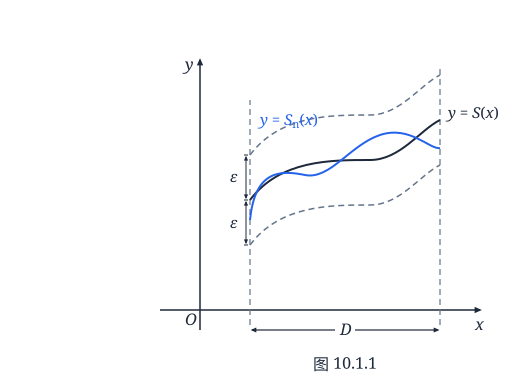
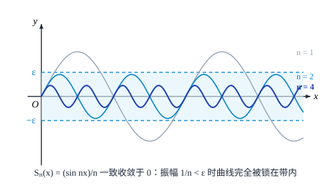
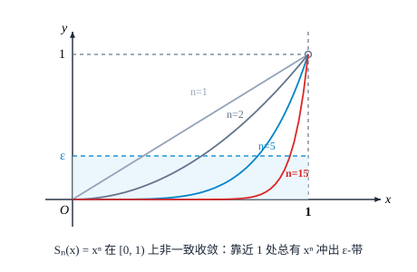
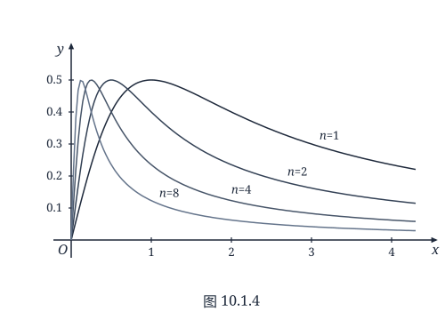

第十章 函数项级数
§1 函数项级数的一致收敛性
点态收敛
现在我们将级数的概念从数推广到函数上去．
设 $u_n(x)\ (n=1,2,3,\dots)$ 是具有公共定义域 $E$ 的一列函数，我们将这无穷个函数的“和”
$$ u_1(x) + u_2(x) + \dots + u_n(x) + \dots $$称为函数项级数，记为 $\sum_{n=1}^\infty u_n(x)$．
函数项级数的收敛性可以借助数项级数来得到．
定义 10.1.1
设 $u_n(x)\ (n=1,2,3,\dots)$ 在 $E$ 上定义．对于任意固定的 $x_0 \in E$，若数项级数 $\sum_{n=1}^\infty u_n(x_0)$ 收敛，则称函数项级数 $\sum_{n=1}^\infty u_n(x)$ 在点 $x_0$ 收敛，或称 $x_0$ 是 $\sum_{n=1}^\infty u_n(x)$ 的收敛点．
函数项级数 $\sum_{n=1}^\infty u_n(x)$ 的收敛点全体所构成的集合称为 $\sum_{n=1}^\infty u_n(x)$ 的收敛域．
设 $\sum_{n=1}^\infty u_n(x)$ 的收敛域为 $D \subset E$，则 $\sum_{n=1}^\infty u_n(x)$ 就定义了集合 $D$ 上的一个函数
$$ S(x) = \sum_{n=1}^\infty u_n(x), \quad x \in D. $$$S(x)$ 称为 $\sum_{n=1}^\infty u_n(x)$ 的和函数．由于这是通过逐点定义的方式得到的，因此称 $\sum_{n=1}^\infty u_n(x)$ 在 $D$ 上点态收敛于 $S(x)$．
例 10.1.1
利用我们目前所掌握的知识（如级数收敛的 Cauchy 判别法，d'Alembert 判别法等）和定义 10.1.1，可知下述结论：
$\sum_{n=1}^\infty x^n$ 的收敛域为 $(-1, 1)$，和函数为 $S(x) = \frac{x}{1-x}$；
$\sum_{n=1}^\infty \frac{x^n}{n}$ 的收敛域为 $[-1, 1)$；
$\sum_{n=1}^\infty \frac{x^n}{n^2}$ 的收敛域为 $[-1, 1]$；
$\sum_{n=1}^\infty \frac{x^n}{n!}$ 的收敛域为 $\mathbf{R} = (-\infty, +\infty)$；
$\sum_{n=1}^\infty (n!)x^n$ 的收敛域为单点集 $\{0\}$；
$\sum_{n=1}^\infty \mathrm{e}^{-nx}$ 的收敛域为 $(0, +\infty)$，和函数为 $S(x) = \frac{1}{\mathrm{e}^x - 1}$．
给定一个函数项级数 $\sum_{n=1}^\infty u_n(x)$，可以作出它的部分和函数
$$ S_n(x) = \sum_{k=1}^n u_k(x), \quad x \in E; $$显然，使 $\{S_n(x)\}$ 收敛的 $x$ 全体正是集合 $D$．因此在 $D$ 上，$\sum_{n=1}^\infty u_n(x)$ 的和函数 $S(x)$ 就是其部分和函数序列 $\{S_n(x)\}$ 的极限，即有
$$ S(x) = \lim_{n\to\infty} S_n(x) = \lim_{n\to\infty} \sum_{k=1}^n u_k(x), \quad x \in D. $$反过来，若给定一个函数序列 $\{S_n(x)\}\ (x \in E)$，只要令
$$ \begin{cases} u_1(x) = S_1(x), \\ u_{n+1}(x) = S_{n+1}(x) - S_n(x) \quad (n=1,2,\dots), \end{cases} $$也可得到相应的函数项级数 $\sum_{n=1}^\infty u_n(x)$，它的部分和函数序列就是 $\{S_n(x)\}$．
所以，函数项级数 $\sum_{n=1}^\infty u_n(x)$ 与函数序列 $\{S_n(x)\}$ 的收敛性在本质上完全是一回事．为方便起见，今后我们将经常通过讨论函数序列来研究函数项级数的性质．
函数项级数（或函数序列）的基本问题
通过前面的学习我们已经知道，若有限个函数 $u_1(x), u_2(x), \dots, u_n(x)$ 在 $D$ 上定义且具有某种分析性质，如连续性、可导性和 Riemann 可积性（以下就称可积性）等，则它们的和函数
$$ u_1(x) + u_2(x) + \dots + u_n(x) $$在 $D$ 上仍保持同样的分析性质，且其和函数的极限（或导数、积分）可以通过对每个函数分别求极限（或导数、积分）后再求和来得到，即成立
$$ \begin{aligned} \text{(a)} &\quad \lim_{x\to x_0}[u_1(x) + u_2(x) + \dots + u_n(x)] = \lim_{x\to x_0} u_1(x) + \lim_{x\to x_0} u_2(x) + \dots + \lim_{x\to x_0} u_n(x); \\ \text{(b)} &\quad \frac{\mathrm{d}}{\mathrm{d}x}[u_1(x) + u_2(x) + \dots + u_n(x)] = \frac{\mathrm{d}}{\mathrm{d}x}u_1(x) + \frac{\mathrm{d}}{\mathrm{d}x}u_2(x) + \dots + \frac{\mathrm{d}}{\mathrm{d}x}u_n(x); \\ \text{(c)} &\quad \int_a^b [u_1(x) + u_2(x) + \dots + u_n(x)]\,\mathrm{d}x = \int_a^b u_1(x)\,\mathrm{d}x + \int_a^b u_2(x)\,\mathrm{d}x + \dots + \int_a^b u_n(x)\,\mathrm{d}x. \end{aligned} $$这些性质给我们带来了很大的方便．
在研究函数项级数时，我们面对的是无限个 $u_n(x)\ (n=1,2,3,\dots)$，它们的和函数 $S(x)$ 大多是不知道的，也就是说，我们只能借助 $u_n(x)$ 的分析性质来间接地获得 $S(x)$ 的分析性质．那么很自然地，我们希望在一定条件下，上述运算法则可以推广到无限个函数求和的情况．
这个问题是函数项级数（或函数序列）研究中的基本问题，其实质是极限（或求导、求积分）运算与无限求和运算在什么条件下可以交换次序（由于求导、求积分与无限求和均可看作特殊的极限运算，因此更一般地，可将其统一视为两种极限运算的交换次序）．下面我们将会看到，仅要求 $\sum_{n=1}^\infty u_n(x)$ 在 $D$ 上点态收敛是不够的．
(1) 将性质 (a) 推广到无限个函数的情况，是指当 $u_n(x)$ 在 $D$ 上连续时，和函数 $S(x) = \sum_{n=1}^\infty u_n(x)$ 也在 $D$ 上连续，并且成立
$$ \lim_{x\to x_0}\sum_{n=1}^\infty u_n(x) = \sum_{n=1}^\infty \lim_{x\to x_0} u_n(x), $$即极限运算与无限求和运算可以交换次序（也称函数项级数 $\sum_{n=1}^\infty u_n(x)$ 可以逐项求极限）．
对于函数序列 $\{S_n(x)\}$ 而言，相应的结论是极限函数 $S(x) = \lim_{n\to\infty} S_n(x)$ 也在 $D$ 上连续，并且成立
$$ \lim_{x\to x_0}\lim_{n\to\infty} S_n(x) = \lim_{n\to\infty}\lim_{x\to x_0} S_n(x), $$即两种极限运算可以交换次序．
下面的例子说明，在点态收敛的情况下，上述性质不一定成立．
例 10.1.2
设 $S_n(x) = x^n$，则 $\{S_n(x)\}$ 在区间 $(-1, 1]$ 上收敛，极限函数
$$ S(x) = \lim_{n\to\infty} S_n(x) = \begin{cases} 0, & -1 < x < 1, \\ 1, & x = 1. \end{cases} $$虽然对一切 $n$，$S_n(x)$ 在 $(-1, 1]$ 上连续（也是可导的），但极限函数 $S(x)$ 在 $x=1$ 不连续（当然更谈不上在 $x=1$ 可导）．
(2) 将性质 (b) 推广到无限个函数的情况，是指当 $u_n(x)$ 在 $D$ 上可导时，和函数 $S(x) = \sum_{n=1}^\infty u_n(x)$ 也在 $D$ 上可导，并且成立
$$ \frac{\mathrm{d}}{\mathrm{d}x}\sum_{n=1}^\infty u_n(x) = \sum_{n=1}^\infty \frac{\mathrm{d}}{\mathrm{d}x} u_n(x), $$即求导运算与无限求和运算可以交换次序（也称函数项级数 $\sum_{n=1}^\infty u_n(x)$ 可以逐项求导）．
对于函数序列 $\{S_n(x)\}$ 而言，相应的结论是极限函数 $S(x) = \lim_{n\to\infty} S_n(x)$ 也在 $D$ 上可导，并且成立
$$ \frac{\mathrm{d}}{\mathrm{d}x}\lim_{n\to\infty} S_n(x) = \lim_{n\to\infty}\frac{\mathrm{d}}{\mathrm{d}x} S_n(x), $$即求导运算与极限运算可以交换次序．
例 10.1.2 已说明在点态收敛情况下，和函数（或极限函数）可能不可导；下面将看到，即使和函数（或极限函数）可导，上述两等式也不一定成立．
例 10.1.3
设 $S_n(x) = \frac{\sin nx}{\sqrt{n}}$，则 $\{S_n(x)\}$ 在 $(-\infty, +\infty)$ 上收敛，极限函数为 $S(x) = 0$，从而导函数 $S'(x) = 0$．
由于
$$ S_n'(x) = \sqrt{n}\cos nx, $$因此 $S_n(x)$ 的导函数所构成的序列 $\{S_n'(x)\}$ 并不收敛于 $S'(x)$（例如当 $x=0$，$S_n'(0) = \sqrt{n} \to +\infty$）．
(3) 将性质 (c) 推广到无限个函数的情况，是指当 $u_n(x)$ 在闭区间 $[a, b] \subset D$ 上可积时，和函数 $S(x) = \sum_{n=1}^\infty u_n(x)$ 也在 $[a, b]$ 上可积，并且成立
$$ \int_a^b \sum_{n=1}^\infty u_n(x)\,\mathrm{d}x = \sum_{n=1}^\infty \int_a^b u_n(x)\,\mathrm{d}x, $$即求积分运算与无限求和运算可以交换次序（也称函数项级数 $\sum_{n=1}^\infty u_n(x)$ 可以逐项求积分）．
对于函数序列 $\{S_n(x)\}$ 而言，相应的结论是极限函数 $S(x) = \lim_{n\to\infty} S_n(x)$ 也在区间 $[a, b]$ 上可积，并且成立
$$ \int_a^b \lim_{n\to\infty} S_n(x)\,\mathrm{d}x = \lim_{n\to\infty}\int_a^b S_n(x)\,\mathrm{d}x, $$即求积分运算与极限运算可以交换次序．
但例 10.1.4 和例 10.1.5 将说明，在点态收敛情况下，和函数（或极限函数）可能不可积；即使可积，上述两等式也不一定成立．
例 10.1.4
设
$$ S_n(x) = \begin{cases} 1, & \text{当 } x \cdot n! \text{ 为整数}, \\ 0, & \text{当 } x \text{ 为其他值}, \end{cases} \quad x \in [0, 1]. $$显然，对每一个 $n \in \mathbf{N}^*$，$S_n(x)$ 在 $[0, 1]$ 上有界，至多只有有限个不连续点，因而是可积的．
但是，当 $x$ 是无理数时，对一切 $n$，$S_n(x) = 0$，因此 $S(x) = \lim_{n\to\infty} S_n(x) = 0$；当 $x$ 是有理数 $\frac{q}{p}\ (p \in \mathbf{N}^*, q \in \mathbf{N}, q \leqslant p)$ 时，对于 $n \geqslant p$，$S_n(x) = 1$，因此 $S(x) = \lim_{n\to\infty} S_n(x) = 1$．所以，$\{S_n(x)\}$ 的极限函数 $S(x)$ 就是熟知的 Dirichlet 函数，它在 $[0, 1]$ 上是不可积的．
例 10.1.5
设 $S_n(x) = nx(1-x^2)^n$，则 $\{S_n(x)\}$ 在区间 $[0, 1]$ 上收敛于极限函数
$S(x) = 0$．显然对任意 $n$，$S_n(x)$ 与 $S(x)$ 都在 $[0, 1]$ 上可积，但是
$$ \begin{aligned} \int_0^1 S_n(x)\,\mathrm{d}x &= \int_0^1 nx(1-x^2)^n\,\mathrm{d}x = -\frac{n}{2}\int_0^1 (1-x^2)^n\,\mathrm{d}(1-x^2) \\ &= \frac{n}{2(n+1)} \to \frac{1}{2} \neq \int_0^1 S(x)\,\mathrm{d}x \quad (n\to\infty). \end{aligned} $$这些例子说明，为了解决这类交换运算次序问题，需要引进比“点态收敛”要求更强的新的收敛概念．
函数项级数（或函数序列）的一致收敛性
“函数序列 $\{S_n(x)\}$ 在集合 $D$ 上（点态）收敛于 $S(x)$”是指对于任意 $x_0 \in D$，数列 $\{S_n(x_0)\}$ 收敛于 $S(x_0)$．用“$\varepsilon$-$N$”语言来表示的话，就是：对任意给定的 $\varepsilon > 0$，可以找到正整数 $N$，当 $n > N$ 时，成立：
$$ |S_n(x_0) - S(x_0)| < \varepsilon. $$一般说来，这里的 $N$ 应理解为 $N(x_0, \varepsilon)$，即 $N$ 不仅与 $\varepsilon$ 有关，而且随着 $x_0$ 的变化而变化．这意味着在 $D$ 的不同处，$S_n(x)$ 的收敛速度可能大相径庭．
我们希望 $\{S_n(x)\}$ 不仅在 $D$ 上点点收敛于 $S(x)$，而且在 $D$ 上的收敛速度具有某种整体一致性．通过分析其“$\varepsilon$-$N$”定义可以比较直观地发现，要做到这一点，关键在于存在一个仅与 $\varepsilon$ 有关，而与 $x_0$ 无关的 $N = N(\varepsilon)$．
定义 10.1.2
设 $\{S_n(x)\}\ (x \in D)$ 是一函数序列，若对任意给定的 $\varepsilon > 0$，存在仅与 $\varepsilon$ 有关的正整数 $N(\varepsilon)$，当 $n > N(\varepsilon)$ 时，
$$ |S_n(x) - S(x)| < \varepsilon $$对一切 $x \in D$ 成立，则称 $\{S_n(x)\}$ 在 $D$ 上一致收敛于 $S(x)$，记为 $S_n(x) \overset{D}{\rightrightarrows} S(x)$．
若函数项级数 $\sum_{n=1}^\infty u_n(x)\ (x \in D)$ 的部分和函数序列 $\{S_n(x)\}$，其中 $S_n(x) = \sum_{k=1}^n u_k(x)$，在 $D$ 上一致收敛于 $S(x)$，则我们称 $\sum_{n=1}^\infty u_n(x)$ 在 $D$ 上一致收敛于 $S(x)$．
采用符号表述的话，就是“$S_n(x) \overset{D}{\rightrightarrows} S(x)$” $\iff \forall \varepsilon > 0, \exists N, \forall n > N, \forall x \in D:$
$$ |S_n(x) - S(x)| < \varepsilon; $$和“$\sum_{n=1}^\infty u_n(x)$ 在 $D$ 上一致收敛于 $S(x)$” $\iff \forall \varepsilon > 0, \exists N, \forall n > N, \forall x \in D:$
$$ \left|\sum_{k=1}^n u_k(x) - S(x)\right| = |S_n(x) - S(x)| < \varepsilon. $$图 10.1.1 给出了一致收敛性的几何描述：对任意给定的 $\varepsilon > 0$，存在 $N = N(\varepsilon)$，当 $n > N(\varepsilon)$ 时，函数 $y = S_n(x)\ (x \in D)$ 的图像都落在带状区域
$$ \{(x, y) \mid x \in D, S(x) - \varepsilon < y < S(x) + \varepsilon\} $$之中．
从定义 10.1.2 立即得到：
推论 10.1.1
若函数项级数 $\sum_{n=1}^\infty u_n(x)$ 在 $D$ 上一致收敛，则函数序列 $\{u_n(x)\}$ 在 $D$

图 10.1.1
上一致收敛于 $u(x) \equiv 0$．
由于函数项级数的一致收敛性本质上就是部分和函数序列的一致收敛性，下面我们仅对函数序列举例讨论．
例 10.1.6
设 $S_n(x) = \frac{x}{1+n^2 x^2}$，则 $\{S_n(x)\}$ 在 $(-\infty, +\infty)$ 上收敛于极限函数 $S(x) = 0$．
因为
$$ |S_n(x) - S(x)| = \frac{|x|}{1+n^2 x^2} \leqslant \frac{1}{2n}, $$所以对任意给定的 $\varepsilon > 0$，只要取 $N = \left[\frac{1}{2\varepsilon}\right]$，当 $n > N$ 时，
$$ |S_n(x) - S(x)| \leqslant \frac{1}{2n} < \varepsilon $$对一切 $x \in (-\infty, +\infty)$ 成立，因此 $\{S_n(x)\}$ 在 $(-\infty, +\infty)$ 上一致收敛于 $S(x) = 0$．
从几何上看（见图 10.1.2），对任意给定的 $\varepsilon > 0$，只要取 $N = \left[\frac{1}{2\varepsilon}\right]$，当 $n > N$ 时，函数 $y = S_n(x)\ (x \in (-\infty, +\infty))$ 的图像都落在带状区域 $\{(x, y) \mid |y| < \varepsilon\}$ 中，这正是一致收敛的几何描述．

图 10.1.2
例 10.1.7
设 $S_n(x) = x^n$（见例 10.1.2），我们考察 $\{S_n(x)\}$ 在区间 $[0, 1)$ 上的一致收敛性．
对任意给定的 $0 < \varepsilon < 1$，要使
$$ |S_n(x) - S(x)| = x^n < \varepsilon, $$必须
$$ n > \frac{\ln\varepsilon}{\ln x}, $$因此 $N = N(x, \varepsilon)$ 至少须取 $\left[\frac{\ln\varepsilon}{\ln x}\right]$．由于当 $x \to 1^-$ 时，$\frac{\ln\varepsilon}{\ln x} \to +\infty$，因此不可能找到对一切 $x \in [0, 1)$ 都适用的 $N = N(\varepsilon)$，换言之，$\{S_n(x)\}$ 在 $[0, 1)$ 上不是一致收敛的．
从几何上看（见图 10.1.3），对每个 $n$，函数 $y = x^n$ 的取值范围（即值域）都是 $[0, 1)$，因此它们的图像不可能落在带状区域 $\{(x, y) \mid x \in [0, 1), 0 < y < \varepsilon\}$ 中．

图 10.1.3
定义 10.1.3
若对于任意给定的闭区间 $[a, b] \subset D$，函数序列 $\{S_n(x)\}$ 在 $[a, b]$ 上一致收敛于 $S(x)$，则称 $\{S_n(x)\}$ 在 $D$ 上内闭一致收敛于 $S(x)$．
显然，在 $D$ 上一致收敛的函数序列必在 $D$ 上内闭一致收敛，但其逆命题不成立．
例如，将例 10.1.7 中考察的区间 $[0, 1)$ 缩小为 $[0, \rho]$，其中 $0 < \rho < 1$ 是任意的，则由
$$ |S_n(x) - S(x)| = x^n \leqslant \rho^n, $$只要取 $N = N(\varepsilon) = \left[\frac{\ln\varepsilon}{\ln\rho}\right]$，当 $n > N$ 时，
$$ |S_n(x) - S(x)| \leqslant \rho^n < \varepsilon $$对一切 $x \in [0, \rho]$ 成立，即 $\{S_n(x)\}$ 在 $[0, \rho]\ (\rho < 1)$ 上是一致收敛的．也就是说，尽管 $\{x^n\}$ 在 $[0, 1)$ 上不一致收敛，但却是内闭一致收敛的．
从图 10.1.3 中可以看出，随着 $n$ 的增大，函数 $y = x^n$ 在区间 $[0, \rho]$ 上的图像越来越接近 $x$ 轴，从而全部落在带状区域 $\{(x, y) \mid 0 \leqslant x \leqslant \rho, 0 \leqslant y \leqslant \varepsilon\}$ 中．
下面我们建立关于一致收敛的两个充分必要条件，它们将有助于对一致收敛性进行判断．
定理 10.1.1
设函数序列 $\{S_n(x)\}$ 在集合 $D$ 上点态收敛于 $S(x)$，定义 $S_n(x)$ 与 $S(x)$ 的“距离”为
$$ d(S_n, S) = \sup_{x\in D} |S_n(x) - S(x)|, $$则 $\{S_n(x)\}$ 在 $D$ 上一致收敛于 $S(x)$ 的充分必要条件是：
$$ \lim_{n\to\infty} d(S_n, S) = 0. $$证 设 $\{S_n(x)\}$ 在 $D$ 上一致收敛于 $S(x)$，则对任意给定的 $\varepsilon > 0$，存在 $N = N(\varepsilon)$，当 $n > N$ 时，
$$ |S_n(x) - S(x)| < \frac{\varepsilon}{2} $$对一切 $x \in D$ 成立，于是对 $n > N$，
$$ d(S_n, S) \leqslant \frac{\varepsilon}{2} < \varepsilon, $$这就说明
$$ \lim_{n\to\infty} d(S_n, S) = 0. $$反过来，若 $\lim_{n\to\infty} d(S_n, S) = 0$，则对任意给定的 $\varepsilon > 0$，存在 $N = N(\varepsilon)$，当 $n > N$ 时，
$$ d(S_n, S) < \varepsilon, $$此式表明
$$ |S_n(x) - S(x)| < \varepsilon $$对一切 $x \in D$ 成立，所以 $\{S_n(x)\}$ 在 $D$ 上一致收敛于 $S(x)$．
对于例 10.1.6 中的 $S_n(x) = \frac{x}{1+n^2 x^2}, x \in (-\infty, +\infty)$，由于
$$ |S_n(x) - S(x)| = \frac{|x|}{1+n^2 x^2} \leqslant \frac{1}{2n}, $$等号成立当且仅当 $x = \pm\frac{1}{n}$，可知
$$ d(S_n, S) = \frac{1}{2n} \to 0 \quad (n\to\infty), $$因此 $\{S_n(x)\}$ 在 $(-\infty, +\infty)$ 上一致收敛于 $S(x) = 0$．
对于例 10.1.7 中的 $S_n(x) = x^n, x \in [0, 1)$，由于
$$ d(S_n, S) = \sup_{0\leqslant x < 1} x^n = 1 \not\to 0 \quad (n\to\infty), $$所以 $\{S_n(x)\}$ 在 $[0, 1)$ 上不是一致收敛的．
例 10.1.8
设 $S_n(x) = \frac{nx}{1+n^2 x^2}$，则 $\{S_n(x)\}$ 在 $(0, +\infty)$ 上收敛于 $S(x) = 0$，由于
$$ |S_n(x) - S(x)| = \frac{nx}{1+n^2 x^2} \leqslant \frac{1}{2}, $$等号成立当且仅当 $x = \frac{1}{n}$，可知
$$ d(S_n, S) = \frac{1}{2} \not\to 0 \quad (n\to\infty), $$因此 $\{S_n(x)\}$ 在 $(0, +\infty)$ 上不是一致收敛的．
从几何上看（见图 10.1.4），对每个 $n$，函数 $y = \frac{nx}{1+n^2 x^2}$ 在 $x = \frac{1}{n}$ 取到最大值 $\frac{1}{2}$，因此它们的图像不可能落在带状区域 $\{(x, y) \mid 0 < x < +\infty, |y| < \varepsilon < \frac{1}{2}\}$ 中．事实上，$\{S_n(x)\}$ 在任意包含 $x=0$ 或以 $x=0$ 为端点的区间上都不是一致收敛的．

图 10.1.4
若将上例中 $\{S_n(x)\}$ 限制在任意有限区间 $[\rho, A]\ (0 < \rho < A < +\infty)$ 上，则由 $|S_n(x) - S(x)| = \frac{nx}{1+n^2 x^2}$ 及
$$ \left(\frac{nx}{1+n^2 x^2}\right)' = \frac{n(1-n^2 x^2)}{(1+n^2 x^2)^2}, $$可以知道当 $n > \frac{1}{\rho}$ 时，$|S_n(x) - S(x)|$ 在 $[\rho, A]$ 单调减少，从而
$$ d(S_n, S) = \frac{n\rho}{1+n^2 \rho^2} \to 0 \quad (n\to\infty), $$即 $\{S_n(x)\}$ 在 $[\rho, A]$ 上一致收敛于 $S(x) = 0$．也就是说，$\{S_n(x)\}$ 在 $(0, +\infty)$ 上内闭一致收敛．
例 10.1.9
设 $S_n(x) = (1-x)x^n$，则 $\{S_n(x)\}$ 在 $[0, 1]$ 上收敛于 $S(x) = 0$．由
$$ |S_n(x) - S(x)| = (1-x)x^n, $$及
$$ [(1-x)x^n]' = x^{n-1}[n - (n+1)x], $$容易知道 $|S_n(x) - S(x)|$ 在 $x = \frac{n}{n+1}$ 取到最大值，从而
$$ d(S_n, S) = \left(1 - \frac{n}{n+1}\right)\left(\frac{n}{n+1}\right)^n = \left(\frac{1}{n+1}\right)\Bigg/\left(1+\frac{1}{n}\right)^n \to 0 \quad (n\to\infty), $$这就说明 $\{S_n(x)\}$ 在 $[0, 1]$ 上一致收敛于 $S(x) = 0$．
例 10.1.10
设 $S_n(x) = \left(1+\frac{x}{n}\right)^n$，则 $\{S_n(x)\}$ 在 $[0, +\infty)$ 上收敛于 $S(x) = \mathrm{e}^x$．证明 $\{S_n(x)\}$ 在 $[0, a]$ 上一致收敛（$a$ 是任意正数）．
证 由于函数
$$ \varphi(x) = \mathrm{e}^{-x}\left(1+\frac{x}{n}\right)^n $$满足
$$ \varphi'(x) = -\mathrm{e}^{-x}\left(1+\frac{x}{n}\right)^{n-1}\frac{x}{n} \leqslant 0, \quad x \in [0, a], $$所以 $\varphi(x)$ 在 $[0, a]$ 上是单调减少函数，且 $\varphi(0) = 1, \varphi(a) = \mathrm{e}^{-a}\left(1+\frac{a}{n}\right)^n$．从而
$$ \mathrm{e}^{-a}\left(1+\frac{a}{n}\right)^n \leqslant \mathrm{e}^{-x}\left(1+\frac{x}{n}\right)^n \leqslant 1, \quad x \in [0, a]. $$所以
$$ \begin{aligned} |S_n(x) - S(x)| &= \left|\left(1+\frac{x}{n}\right)^n - \mathrm{e}^x\right| = \mathrm{e}^x\left|\mathrm{e}^{-x}\left(1+\frac{x}{n}\right)^n - 1\right| \\ &\leqslant \mathrm{e}^a\left(1 - \mathrm{e}^{-a}\left(1+\frac{a}{n}\right)^n\right), \quad x \in [0, a], \end{aligned} $$于是
$$ 0 \leqslant d(S_n, S) \leqslant \mathrm{e}^a\left(1 - \mathrm{e}^{-a}\left(1+\frac{a}{n}\right)^n\right). $$由于 $\lim_{n\to\infty}\mathrm{e}^a\left(1 - \mathrm{e}^{-a}\left(1+\frac{a}{n}\right)^n\right) = 0$，所以 $\lim_{n\to\infty} d(S_n, S) = 0$．这就说明 $\{S_n(x)\}$ 在 $[0, a]$ 上一致收敛于 $S(x) = \mathrm{e}^x$．
定理 10.1.2
设函数序列 $\{S_n(x)\}$ 在集合 $D$ 上点态收敛于 $S(x)$，则 $\{S_n(x)\}$ 在 $D$ 上一致收敛于 $S(x)$ 的充分必要条件是：对任意数列 $\{x_n\}, x_n \in D$，成立
$$ \lim_{n\to\infty}(S_n(x_n) - S(x_n)) = 0. $$证 先证必要性．设 $\{S_n(x)\}$ 在 $D$ 上一致收敛于 $S(x)$，则
$$ d(S_n, S) = \sup_{x\in D}|S_n(x) - S(x)| \to 0 \quad (n\to\infty). $$于是对任意数列 $\{x_n\}, x_n \in D$，成立
$$ |S_n(x_n) - S(x_n)| \leqslant d(S_n, S) \to 0 \quad (n\to\infty). $$关于充分性，我们采用反证法，也就是证明：若 $\{S_n(x)\}$ 在 $D$ 上不一致收敛于 $S(x)$，则一定能找到数列 $\{x_n\}, x_n \in D$，使得 $S_n(x_n) - S(x_n) \not\to 0\ (n\to\infty)$．
由于命题“$\{S_n(x)\}$ 在 $D$ 上一致收敛于 $S(x)$”可以表述为
$$ \forall \varepsilon > 0, \exists N, \forall n > N, \forall x \in D : |S_n(x) - S(x)| < \varepsilon, $$因此它的否定命题“$\{S_n(x)\}$ 在 $D$ 上不一致收敛于 $S(x)$”可以表述为：
$$ \exists \varepsilon_0 > 0, \forall N > 0, \exists n > N, \exists x \in D : |S_n(x) - S(x)| \geqslant \varepsilon_0. $$于是，下述步骤可以依次进行：
$$ \begin{aligned} \text{取 } N_1 = 1, &\quad \exists n_1 > 1, \exists x_{n_1} \in D : |S_{n_1}(x_{n_1}) - S(x_{n_1})| \geqslant \varepsilon_0, \\ \text{取 } N_2 = n_1, &\quad \exists n_2 > n_1, \exists x_{n_2} \in D : |S_{n_2}(x_{n_2}) - S(x_{n_2})| \geqslant \varepsilon_0, \\ &\dots\dots \end{aligned} $$ $$ \text{取 } N_k = n_{k-1}, \quad \exists n_k > n_{k-1}, \exists x_{n_k} \in D : |S_{n_k}(x_{n_k}) - S(x_{n_k})| \geqslant \varepsilon_0, $$ $$ \dots\dots $$对于 $m \in \mathbf{N}^* \setminus \{n_1, n_2, \dots, n_k, \dots\}$，可以任取 $x_m \in D$，这样就得到数列 $\{x_n\}, x_n \in D$，由于它的子列 $\{x_{n_k}\}$ 使得
$$ |S_{n_k}(x_{n_k}) - S(x_{n_k})| \geqslant \varepsilon_0, $$显然不可能成立
$$ \lim_{n\to\infty}(S_n(x_n) - S(x_n)) = 0. $$定理 10.1.2 常用于判断函数序列的不一致收敛．
如对例 10.1.7 中的 $S_n(x) = x^n, x \in [0, 1)$，可以取 $x_n = 1 - \frac{1}{n} \in [0, 1)$，则
$$ S_n(x_n) - S(x_n) = \left(1 - \frac{1}{n}\right)^n \to \frac{1}{\mathrm{e}} \quad (n\to\infty), $$这说明 $\{S_n(x)\}$ 在 $[0, 1)$ 上不一致收敛于 $S(x) = 0$；对例 10.1.8 中的 $S_n(x) = \frac{nx}{1+n^2 x^2}, x \in (0, +\infty)$，可以取 $x_n = \frac{1}{n}$，则
$$ S_n(x_n) - S(x_n) = \frac{1}{2}, $$同样也说明 $\{S_n(x)\}$ 在 $(0, +\infty)$ 上不一致收敛于 $S(x) = 0$．
例 10.1.11
设 $S_n(x) = nx(1-x^2)^n, x \in [0, 1]$（见例 10.1.5），则 $\{S_n(x)\}$ 在 $[0, 1]$ 上收敛于 $S(x) = 0$．取 $x_n = \frac{1}{n} \in [0, 1]$，则
$$ S_n(x_n) - S(x_n) = \left(1 - \frac{1}{n^2}\right)^n \to 1 \quad (n\to\infty), $$这说明 $\{S_n(x)\}$ 在 $[0, 1]$ 上不一致收敛于 $S(x) = 0$．
例 10.1.12
设 $S_n(x) = \left(1+\frac{x}{n}\right)^n$，则 $\{S_n(x)\}$ 在 $[0, +\infty)$ 上收敛于 $S(x) = \mathrm{e}^x$．证明 $\{S_n(x)\}$ 在 $[0, +\infty)$ 上不一致收敛（见例 10.1.10）．
证 取 $x_n = n$，则
$$ S_n(x_n) - S(x_n) = 2^n - \mathrm{e}^n \to -\infty \quad (n\to\infty), $$由定理 10.1.2，$\{S_n(x)\}$ 在 $[0, +\infty)$ 上不一致收敛于 $S(x) = \mathrm{e}^x$．
例 10.1.13
证明函数项级数 $\sum_{n=1}^\infty n\left(x+\frac{1}{n}\right)^n$ 在 $(-1, 1)$ 上不一致收敛（请读者自行证明该函数项级数的收敛域为 $(-1, 1)$）．
证 记
$$ u_n(x) = n\left(x+\frac{1}{n}\right)^n, $$则函数序列 $\{u_n(x)\}$ 在 $(-1, 1)$ 上收敛于 $u(x) = 0$．
由推论 10.1.1 知，要证明 $\sum_{n=1}^\infty n\left(x+\frac{1}{n}\right)^n$ 在 $(-1, 1)$ 上不一致收敛，只要证明函数序列 $\{u_n(x)\}$ 在 $(-1, 1)$ 上不一致收敛于 $u(x) = 0$ 即可．
取 $x_n = 1 - \frac{1}{2n} \in (-1, 1)$，则
$$ u_n(x_n) - u(x_n) = n\left(1 + \frac{1}{2n}\right)^n \to \infty \quad (n\to\infty), $$由定理 10.1.2，$\{u_n(x)\}$ 在 $(-1, 1)$ 上不一致收敛于 $u(x) = 0$．
习题 10.1
-
讨论下列函数序列在指定区间上的一致收敛性：
(1) $S_n(x) = \mathrm{e}^{-nx}$，(i) $x \in (0, 1)$，(ii) $x \in (1, +\infty)$；
(2) $S_n(x) = x\mathrm{e}^{-nx}$，$x \in (0, +\infty)$；
(3) $S_n(x) = \sin\frac{x}{n}$，(i) $x \in (-\infty, +\infty)$，(ii) $x \in [-A, A]\ (A > 0)$；
(4) $S_n(x) = \arctan nx$，(i) $x \in (0, 1)$，(ii) $x \in (1, +\infty)$；
(5) $S_n(x) = \sqrt{x^2 + \frac{1}{n^2}}$，$x \in (-\infty, +\infty)$；
(6) $S_n(x) = nx(1-x)^n$，$x \in [0, 1]$；
(7) $S_n(x) = \frac{x}{n}\ln\frac{x}{n}$，(i) $x \in (0, 1)$，(ii) $x \in (1, +\infty)$；
(8) $S_n(x) = \frac{x^n}{1+x^n}$，(i) $x \in (0, 1)$，(ii) $x \in (1, +\infty)$；
(9) $S_n(x) = (\sin x)^n$，$x \in [0, \pi]$；
(10) $S_n(x) = (\sin x)^{\frac{1}{n}}$，(i) $x \in [0, \pi]$，(ii) $x \in [\delta, \pi-\delta]\ (\delta > 0)$；
(11) $S_n(x) = \left(1+\frac{x}{n}\right)^n$，(i) $x \in (-\infty, +\infty)$，(ii) $x \in [-A, A]\ (A > 0)$；
(12) $S_n(x) = n\left(\sqrt{x+\frac{1}{n}} - \sqrt{x}\right)$，(i) $x \in (0, +\infty)$，(ii) $x \in [\delta, +\infty), \delta > 0$．
-
设 $S_n(x) = n(x^n - x^{2n})$，则函数序列 $\{S_n(x)\}$ 在 $[0, 1]$ 上收敛但不一致收敛，且极限运算与积分运算不能交换，即
$$ \lim_{n\to\infty} \int_0^1 S_n(x)\,\mathrm{d}x \neq \int_0^1 \lim_{n\to\infty} S_n(x)\,\mathrm{d}x. $$ -
设 $S_n(x) = \frac{x}{1+n^2 x^2}$，则
(1) 函数序列 $\{S_n(x)\}$ 在 $(-\infty, +\infty)$ 上一致收敛；
(2) $\left\{\frac{\mathrm{d}}{\mathrm{d}x} S_n(x)\right\}$ 在 $(-\infty, +\infty)$ 上不一致收敛；
(3) 极限运算与求导运算不能交换，即
$$ \lim_{n\to\infty}\frac{\mathrm{d}}{\mathrm{d}x}S_n(x) = \frac{\mathrm{d}}{\mathrm{d}x}\lim_{n\to\infty}S_n(x) $$并不对一切 $x \in (-\infty, +\infty)$ 成立．
-
设 $S_n(x) = \frac{1}{n}\arctan x^n$，则函数序列 $\{S_n(x)\}$ 在 $(0, +\infty)$ 上一致收敛；试问极限运算与求导运算能否交换，即
$$ \lim_{n\to\infty}\frac{\mathrm{d}}{\mathrm{d}x}S_n(x) = \frac{\mathrm{d}}{\mathrm{d}x}\lim_{n\to\infty}S_n(x) $$是否成立？
-
设 $S_n(x) = n^\alpha x \mathrm{e}^{-nx}$，其中 $\alpha$ 是参数．求 $\alpha$ 的取值范围，使得函数序列 $\{S_n(x)\}$ 在 $[0, 1]$ 上
(1) 一致收敛；
(2) 积分运算与极限运算可以交换，即
$$ \lim_{n\to\infty}\int_0^1 S_n(x)\,\mathrm{d}x = \int_0^1 \lim_{n\to\infty}S_n(x)\,\mathrm{d}x; $$(3) 求导运算与极限运算可以交换，即对一切 $x \in [0, 1]$ 成立
$$ \lim_{n\to\infty}\frac{\mathrm{d}}{\mathrm{d}x}S_n(x) = \frac{\mathrm{d}}{\mathrm{d}x}\lim_{n\to\infty}S_n(x). $$ -
设 $S'(x)$ 在区间 $(a, b)$ 上连续，
$$ S_n(x) = n\left[S\left(x+\frac{1}{n}\right) - S(x)\right], $$证明：$\{S_n(x)\}$ 在 $(a, b)$ 上内闭一致收敛于 $S'(x)$．
-
设 $S_0(x)$ 在 $[0, a]$ 上连续，令
$$ S_n(x) = \int_0^x S_{n-1}(t)\,\mathrm{d}t, \quad n=1,2,\dots. $$证明：$\{S_n(x)\}$ 在 $[0, a]$ 上一致收敛于 $0$．
-
设 $S(x)$ 在 $[0, 1]$ 上连续，且 $S(1) = 0$．证明：$\{x^n S(x)\}$ 在 $[0, 1]$ 上一致收敛．
§2 一致收敛级数的判别与性质
一致收敛的判别
用定义或定理 10.1.1 和定理 10.1.2 判断函数项级数（或函数序列）的一致收敛性需要先知道它的和函数（或极限函数），这在许多情况下是难以甚至完全不可能做到的，因此有必要寻找无需事先知道和函数（或极限函数）的判断条件．
我们知道，用“$\varepsilon$-$N$”定义判断一个数列的极限，需要先知道它的极限值，而用 Cauchy 收敛原理则可以避开这一点．将这个结论用于函数项级数，就有
定理 10.2.1（函数项级数一致收敛的 Cauchy 收敛原理）
函数项级数 $\sum_{n=1}^\infty u_n(x)$ 在 $D$ 上一致收敛的充分必要条件是：对于任意给定的 $\varepsilon > 0$，存在正整数 $N = N(\varepsilon)$，使得
$$ |u_{n+1}(x) + u_{n+2}(x) + \dots + u_m(x)| < \varepsilon $$对一切正整数 $m > n > N$ 与一切 $x \in D$ 成立．
证 必要性．设 $\sum_{n=1}^\infty u_n(x)$ 在 $D$ 上一致收敛，记和函数为 $S(x)$，则对任意给定的 $\varepsilon > 0$，存在正整数 $N = N(\varepsilon)$，使得对一切 $n > N$ 与一切 $x \in D$，成立
$$ \left|\sum_{k=1}^n u_k(x) - S(x)\right| < \frac{\varepsilon}{2}. $$于是对一切 $m > n > N$ 与一切 $x \in D$，成立
$$ \begin{aligned} |u_{n+1}(x) + u_{n+2}(x) + \dots + u_m(x)| &= \left|\sum_{k=1}^m u_k(x) - \sum_{k=1}^n u_k(x)\right| \\ &\leqslant \left|\sum_{k=1}^m u_k(x) - S(x)\right| + \left|\sum_{k=1}^n u_k(x) - S(x)\right| < \varepsilon. \end{aligned} $$充分性．设对任意给定的 $\varepsilon > 0$，存在正整数 $N = N(\varepsilon)$，使得对一切 $m > n > N$ 与一切 $x \in D$，成立
$$ |u_{n+1}(x) + u_{n+2}(x) + \dots + u_m(x)| = \left|\sum_{k=1}^m u_k(x) - \sum_{k=1}^n u_k(x)\right| < \frac{\varepsilon}{2}. $$固定 $x \in D$，则数项级数 $\sum_{n=1}^\infty u_n(x)$ 满足 Cauchy 收敛原理，因而收敛．设
$$ S(x) = \sum_{n=1}^\infty u_n(x), \quad x \in D, $$在 $\left|\sum_{k=1}^m u_k(x) - \sum_{k=1}^n u_k(x)\right| < \frac{\varepsilon}{2}$ 中固定 $n$，令 $m \to \infty$，则得到
$$ \left|\sum_{k=1}^n u_k(x) - S(x)\right| \leqslant \frac{\varepsilon}{2} < \varepsilon $$对一切 $x \in D$ 成立，因而 $\sum_{n=1}^\infty u_n(x)$ 在 $D$ 上一致收敛于 $S(x)$．
可以相应写出函数序列一致收敛的 Cauchy 收敛原理：
函数序列 $\{S_n(x)\}$ 在 $D$ 上一致收敛 $\iff \forall \varepsilon > 0, \exists N, \forall m > n > N, \forall x \in D : |S_m(x) - S_n(x)| < \varepsilon$．
定理 10.2.2（Weierstrass 判别法）
设函数项级数 $\sum_{n=1}^\infty u_n(x)\ (x \in D)$ 的每一项 $u_n(x)$ 满足
$$ |u_n(x)| \leqslant a_n, \quad x \in D, $$并且数项级数 $\sum_{n=1}^\infty a_n$ 收敛，则 $\sum_{n=1}^\infty u_n(x)$ 在 $D$ 上一致收敛．
证 由于对一切 $x \in D$ 和正整数 $m > n$，有
$$ |u_{n+1}(x) + u_{n+2}(x) + \dots + u_m(x)| \leqslant |u_{n+1}(x)| + |u_{n+2}(x)| + \dots + |u_m(x)| \leqslant a_{n+1} + a_{n+2} + \dots + a_m, $$由定理 10.2.1 和数项级数的 Cauchy 收敛原理，即得到 $\sum_{n=1}^\infty u_n(x)$ 在 $D$ 上一致收敛．
从上面证明可进一步知道，此时不仅 $\sum_{n=1}^\infty u_n(x)$ 在 $D$ 上一致收敛，并且对级数各项取绝对值所得的函数项级数 $\sum_{n=1}^\infty |u_n(x)|$ 也在 $D$ 上一致收敛．
例 10.2.1
若 $\sum_{n=1}^\infty a_n$ 绝对收敛，则 $\sum_{n=1}^\infty a_n \cos nx$ 与 $\sum_{n=1}^\infty a_n \sin nx$ 在 $(-\infty, +\infty)$ 上一致收敛．比如，$\sum_{n=1}^\infty \frac{\cos nx}{n^p}\ (p > 1)$，$\sum_{n=1}^\infty \frac{(-1)^n \sin nx}{n^2+1}$ 等函数项级数都在 $(-\infty, +\infty)$ 上一致收敛．
例 10.2.2
函数项级数 $\sum_{n=1}^\infty x^\alpha \mathrm{e}^{-nx}\ (\alpha > 1)$ 在 $[0, +\infty)$ 上一致收敛．
证 记
$$ u_n(x) = x^\alpha \mathrm{e}^{-nx}, $$则 $u_n'(x) = x^{\alpha-1}\mathrm{e}^{-nx}(\alpha - nx)$．于是容易知道 $u_n(x)$ 在 $x = \frac{\alpha}{n}$ 处达到最大值 $\left(\frac{\alpha}{\mathrm{e}}\right)^\alpha \frac{1}{n^\alpha}$，即
$$ 0 \leqslant u_n(x) \leqslant \left(\frac{\alpha}{\mathrm{e}}\right)^\alpha \frac{1}{n^\alpha}, \quad x \in [0, +\infty). $$由于 $\alpha > 1$，正项级数 $\sum_{n=1}^\infty \left(\frac{\alpha}{\mathrm{e}}\right)^\alpha \frac{1}{n^\alpha}$ 收敛，由 Weierstrass 判别法，$\sum_{n=1}^\infty x^\alpha \mathrm{e}^{-nx}\ (\alpha > 1)$ 在 $[0, +\infty)$ 上一致收敛．
例 10.2.3
函数项级数 $\sum_{n=1}^\infty x^\alpha \mathrm{e}^{-nx}\ (0 < \alpha \leqslant 1)$ 在 $[0, +\infty)$ 上非一致收敛．
证 记
$$ u_n(x) = x^\alpha \mathrm{e}^{-nx}, $$我们证明 $\sum_{n=1}^\infty u_n(x)$ 在 $[0, +\infty)$ 上不满足定理 10.2.1（函数项级数一致收敛的 Cauchy 收敛原理）的条件．注意到有不等式
$$ \sum_{k=n+1}^{2n} u_k(x) = x^\alpha \mathrm{e}^{-(n+1)x} + x^\alpha \mathrm{e}^{-(n+2)x} + \dots + x^\alpha \mathrm{e}^{-2nx} \geqslant n x^\alpha \mathrm{e}^{-2nx}, $$我们取 $0 < \varepsilon_0 < \mathrm{e}^{-2}$，对于任意的自然数 $N$，可取 $m = 2n\ (n > N)$ 与 $x_n = \frac{1}{n} \in [0, +\infty)$，由于 $\alpha \leqslant 1$，于是成立
$$ \sum_{k=n+1}^{2n} u_k(x_n) \geqslant n x_n^\alpha \mathrm{e}^{-2n x_n} \geqslant \mathrm{e}^{-2} > \varepsilon_0. $$由定理 10.2.1，函数项级数 $\sum_{n=1}^\infty u_n(x)$ 在 $[0, +\infty)$ 上非一致收敛．
定理 10.2.3
设函数项级数 $\sum_{n=1}^\infty a_n(x)b_n(x)\ (x \in D)$ 满足如下两个条件之一，则 $\sum_{n=1}^\infty a_n(x)b_n(x)$ 在 $D$ 上一致收敛．
(1)（Abel 判别法） 函数序列 $\{a_n(x)\}$ 对每一固定的 $x \in D$ 关于 $n$ 是单调的，且 $\{a_n(x)\}$ 在 $D$ 上一致有界：
$$ |a_n(x)| \leqslant M, \quad x \in D, n \in \mathbf{N}^*; $$同时，函数项级数 $\sum_{n=1}^\infty b_n(x)$ 在 $D$ 上一致收敛．
(2)（Dirichlet 判别法） 函数序列 $\{a_n(x)\}$ 对每一固定的 $x \in D$ 关于 $n$ 是单调的，且 $\{a_n(x)\}$ 在 $D$ 上一致收敛于 $0$；同时，函数项级数 $\sum_{n=1}^\infty b_n(x)$ 的部分和序列在 $D$ 上一致有界：
$$ \left|\sum_{k=1}^n b_k(x)\right| \leqslant M, \quad x \in D, n \in \mathbf{N}^*. $$证 (1) 由 $\sum_{n=1}^\infty b_n(x)$ 在 $D$ 上的一致收敛性，对任意给定的 $\varepsilon > 0$，存在正整数 $N = N(\varepsilon)$，使
$$ \left|\sum_{k=n+1}^m b_k(x)\right| < \varepsilon $$对一切 $m > n > N$ 与一切 $x \in D$ 成立．应用 Abel 引理，得到
$$ \left|\sum_{k=n+1}^m a_k(x)b_k(x)\right| \leqslant \varepsilon(|a_{n+1}(x)| + 2|a_m(x)|) \leqslant 3M\varepsilon $$对一切 $m > n > N$ 与一切 $x \in D$ 成立，根据 Cauchy 收敛原理（定理 10.2.1），$\sum_{n=1}^\infty a_n(x)b_n(x)$ 在 $D$ 上一致收敛．这就证明了 Abel 判别法．
(2) 由 $\{a_n(x)\}$ 在 $D$ 上一致收敛于 $0$，对任意给定的 $\varepsilon > 0$，存在正整数 $N = N(\varepsilon)$，当 $n > N$ 时，对一切 $x \in D$ 成立
$$ |a_n(x)| < \varepsilon. $$由于对一切 $m > n > N$，
$$ \left|\sum_{k=n+1}^m b_k(x)\right| = \left|\sum_{k=1}^m b_k(x) - \sum_{k=1}^n b_k(x)\right| \leqslant 2M, $$应用 Abel 引理，得到
$$ \left|\sum_{k=n+1}^m a_k(x)b_k(x)\right| \leqslant 2M(|a_{n+1}(x)| + 2|a_m(x)|) < 6M\varepsilon $$对一切 $x \in D$ 成立．根据 Cauchy 收敛原理（定理 10.2.1），$\sum_{n=1}^\infty a_n(x)b_n(x)$ 在 $D$ 上一致收敛．这就证明了 Dirichlet 判别法．
注 在定理 10.2.3 的两个判别法的条件中，都要求 $\{a_n(x)\}$ 关于 $n$ 单调，请读者思考是什么原因．
例 10.2.4
设 $\sum_{n=1}^\infty a_n$ 收敛，则 $\sum_{n=1}^\infty a_n x^n$ 在 $[0, 1]$ 上一致收敛．
证 显然 $\{x^n\}$ 关于 $n$ 单调，且
$$ |x^n| \leqslant 1, \quad x \in [0, 1] $$对一切 $n$ 成立；$\sum_{n=1}^\infty a_n$ 是数项级数，它的收敛性就意味着关于 $x$ 的一致收敛性．由 Abel 判别法，得到 $\sum_{n=1}^\infty a_n x^n$ 在 $[0, 1]$ 上的一致收敛性．特别地，如 $\sum_{n=1}^\infty \frac{(-1)^n}{n^p}x^n\ (p > 0)$ 在 $[0, 1]$ 上一致收敛．
例 10.2.5
设 $\{a_n\}$ 单调收敛于 $0$，则 $\sum_{n=1}^\infty a_n \cos nx$ 与 $\sum_{n=1}^\infty a_n \sin nx$ 在 $(0, 2\pi)$ 上内闭一致收敛．
证 数列 $\{a_n\}$ 收敛于 $0$ 意味着关于 $x$ 一致收敛于 $0$．另外，对任意 $0 < \delta < \pi$，当 $x \in [\delta, 2\pi-\delta]$ 时，
$$ \left|\sum_{k=1}^n \cos kx\right| = \frac{\left|\sin\left(n+\frac{1}{2}\right)x - \sin\frac{x}{2}\right|}{2\left|\sin\frac{x}{2}\right|} \leqslant \frac{1}{\sin\frac{\delta}{2}}; $$ $$ \left|\sum_{k=1}^n \sin kx\right| = \frac{\left|\cos\left(n+\frac{1}{2}\right)x - \cos\frac{x}{2}\right|}{2\left|\sin\frac{x}{2}\right|} \leqslant \frac{1}{\sin\frac{\delta}{2}}. $$由 Dirichlet 判别法，得到 $\sum_{n=1}^\infty a_n \cos nx$ 与 $\sum_{n=1}^\infty a_n \sin nx$ 在 $[\delta, 2\pi-\delta]$ 上的一致收敛性．
一致收敛级数的性质
现在我们可以来回答上一节中提出的关于函数项级数（或函数序列）的基本问题，即在什么条件下，和函数（或极限函数）仍然保持连续性、可导性、可积性等分析性质．
定理 10.2.4（连续性定理）
设函数序列 $\{S_n(x)\}$ 的每一项 $S_n(x)$ 在 $[a, b]$ 上连续，且在 $[a, b]$ 上一致收敛于 $S(x)$，则 $S(x)$ 在 $[a, b]$ 上也连续．
证 设 $x_0$ 是 $[a, b]$ 中任意一点．
由 $\{S_n(x)\}$ 在 $[a, b]$ 上一致收敛于 $S(x)$，可知对任意给定的 $\varepsilon > 0$，存在正整数 $N$，使得
$$ |S_N(x) - S(x)| < \frac{\varepsilon}{3} $$对一切 $x \in [a, b]$ 成立．特别，对 $x_0$ 与任意的 $x_0 + h \in [a, b]$，成立
$$ |S_N(x_0) - S(x_0)| < \frac{\varepsilon}{3}, $$ $$ |S_N(x_0 + h) - S(x_0 + h)| < \frac{\varepsilon}{3}. $$由于 $S_N(x)$ 在 $[a, b]$ 上连续，所以存在 $\delta > 0$，当 $|h| < \delta$ 时，
$$ |S_N(x_0 + h) - S_N(x_0)| < \frac{\varepsilon}{3}. $$于是当 $|h| < \delta$ 时，
$$ \begin{aligned} |S(x_0 + h) - S(x_0)| &\leqslant |S(x_0 + h) - S_N(x_0 + h)| + |S_N(x_0 + h) - S_N(x_0)| + |S_N(x_0) - S(x_0)| \\ &< \varepsilon, \end{aligned} $$即 $S(x)$ 在 $x_0$ 连续．
由 $x_0$ 在 $[a, b]$ 中的任意性，就得到 $S(x)$ 在 $[a, b]$ 上连续．
在定理 10.2.4 条件下，成立
$$ \lim_{x \to x_0} \lim_{n \to \infty} S_n(x) = \lim_{n \to \infty} \lim_{x \to x_0} S_n(x), $$即两个极限运算可以交换次序．
如果将上述定理中的 $\{S_n(x)\}$ 看成函数项级数 $\sum_{n=1}^\infty u_n(x)$ 的部分和函数序列，那么对应到函数项级数，连续性定理可以表述为：
定理 10.2.4'
设对每个 $n$，$u_n(x)$ 在 $[a, b]$ 上连续，且 $\sum_{n=1}^\infty u_n(x)$ 在 $[a, b]$ 上一致收敛于 $S(x)$，则 $S(x)$ 在 $[a, b]$ 上连续．这时，对任意 $x_0 \in [a, b]$，成立
$$ \lim_{x \to x_0} \sum_{n=1}^\infty u_n(x) = \sum_{n=1}^\infty \lim_{x \to x_0} u_n(x), $$即极限运算与无限求和运算可以交换次序．
注 由于连续性是函数的一种局部性质（连续是逐点定义的），因此，在每个 $u_n(x)$（或 $S_n(x)$）在开区间 $(a, b)$ 上连续的前提下，只要 $\sum_{n=1}^\infty u_n(x)$（或 $S_n(x)$）在 $(a, b)$ 上内闭一致收敛于 $S(x)$，就足以保证 $S(x)$ 在开区间 $(a, b)$ 上连续．请读者结合分析 $\{x^n\}$ 在 $(0, 1)$ 上的一致收敛情况与 $S(x)$ 的连续性自行思考．
例 10.2.6
由例 10.2.5，当 $\{a_n\}$ 单调收敛于 $0$ 时，函数项级数 $\sum_{n=1}^\infty a_n \cos nx$ 与 $\sum_{n=1}^\infty a_n \sin nx$ 在 $(0, 2\pi)$ 上都是内闭一致收敛的．由于每项 $a_n \sin nx$ 与 $a_n \cos nx$ 关于 $x$ 都是连续的，由定理 10.2.4'，$\sum_{n=1}^\infty a_n \cos nx$ 与 $\sum_{n=1}^\infty a_n \sin nx$ 在 $(0, 2\pi)$ 上都是连续的．比如
$$ \sum_{n=1}^\infty \frac{\sin nx}{\sqrt{n}}, \quad \sum_{n=1}^\infty \frac{n \cos nx}{n^2+1} $$等，都是 $(0, 2\pi)$ 上的连续函数．
定理 10.2.5
设函数序列 $\{S_n(x)\}$ 的每一项 $S_n(x)$ 在 $[a, b]$ 上连续，且在 $[a, b]$ 上一致收敛于 $S(x)$，则 $S(x)$ 在 $[a, b]$ 上可积，且
$$ \int_a^b S(x)\,dx = \lim_{n \to \infty} \int_a^b S_n(x)\,dx. $$证 由定理 10.2.4，$S(x)$ 在 $[a, b]$ 上连续，因而在 $[a, b]$ 上可积．由于 $\{S_n(x)\}$ 在 $[a, b]$ 上一致收敛于 $S(x)$，所以对任意给定的 $\varepsilon > 0$，存在正整数 $N$，当 $n > N$ 时，
$$ |S_n(x) - S(x)| < \varepsilon $$对一切 $x \in [a, b]$ 成立，于是
$$ \left|\int_a^b S_n(x)\,dx - \int_a^b S(x)\,dx\right| \leqslant \int_a^b |S_n(x) - S(x)|\,dx < (b - a)\varepsilon. $$在定理 10.2.5 条件下，成立
$$ \int_a^b \lim_{n \to \infty} S_n(x)\,dx = \lim_{n \to \infty} \int_a^b S_n(x)\,dx, $$即积分运算可以和极限运算交换次序．
如果将上述定理中的 $\{S_n(x)\}$ 看成函数项级数 $\sum_{n=1}^\infty u_n(x)$ 的部分和函数序列，对应到函数项级数，就得到
定理 10.2.5'（逐项积分定理）
设对每个 $n$，$u_n(x)$ 在 $[a, b]$ 上连续，且 $\sum_{n=1}^\infty u_n(x)$ 在 $[a, b]$ 上一致收敛于 $S(x)$，则 $S(x)$ 在 $[a, b]$ 上可积，且
$$ \int_a^b S(x)\,dx = \int_a^b \sum_{n=1}^\infty u_n(x)\,dx = \sum_{n=1}^\infty \int_a^b u_n(x)\,dx, $$即积分运算可以和无限求和运算交换次序．
注 在定理 10.2.5（或定理 10.2.5'）的条件下，可以得到“对任意固定的 $x_0 \in [a, b]$，函数序列 $\left\{\int_{x_0}^x S_n(t)\,dt\right\}$（或函数项级数 $\sum_{n=1}^\infty \int_{x_0}^x u_n(t)\,dt$）在 $[a, b]$ 上一致收敛于 $\int_{x_0}^x S(t)\,dt$”的结论，请读者自己给出证明．
例 10.2.7
证明：当 $x \in (-1, 1)$ 时，成立
$$ \sum_{n=1}^\infty \frac{(-1)^{n-1}}{2n-1} x^{2n-1} = x - \frac{1}{3}x^3 + \frac{1}{5}x^5 - \cdots = \arctan x. $$证 对任意 $x \in (-1, 1)$，可以取到 $\delta > 0$，使 $x \in [-1+\delta, 1-\delta]$．函数项级数 $\sum_{n=1}^\infty (-1)^{n-1} x^{2n-2}$ 的部分和序列 $\{S_n(x)\}$ 的通项为
$$ S_n(x) = \frac{1}{1+x^2}\left[1 - (-x^2)^n\right], $$由于 $(-x^2)^n$ 在 $[-1+\delta, 1-\delta]$ 上一致收敛于 $0$，易知 $\sum_{n=1}^\infty (-1)^{n-1} x^{2n-2}$ 在 $[-1+\delta, 1-\delta]$ 上一致收敛于 $S(x) = \frac{1}{1+x^2}$．
应用定理 10.2.5' 进行逐项求积分
$$ \sum_{n=1}^\infty \int_0^x (-1)^{n-1} t^{2n-2}\,dt = \int_0^x \frac{dt}{1+t^2}, $$即得到
$$ \sum_{n=1}^\infty \frac{(-1)^{n-1}}{2n-1} x^{2n-1} = x - \frac{1}{3}x^3 + \frac{1}{5}x^5 - \cdots = \arctan x, \quad x \in (-1, 1). $$例 10.2.8
证明：当 $x \in (-1, 1)$ 时，成立
$$ \sum_{n=1}^\infty \frac{(-1)^{n-1}}{n} x^n = x - \frac{1}{2}x^2 + \frac{1}{3}x^3 - \cdots = \ln(1+x). $$证 对任意 $x \in (-1, 1)$，取 $\delta > 0$，使 $x \in [-1+\delta, 1-\delta]$．类似例 10.2.7，可知函数项级数 $\sum_{n=1}^\infty (-1)^{n-1} x^{n-1}$ 在 $[-1+\delta, 1-\delta]$ 上一致收敛于 $S(x) = \frac{1}{1+x}$．
应用定理 10.2.5' 进行逐项求积分
$$ \sum_{n=1}^\infty \int_0^x (-1)^{n-1} t^{n-1}\,dt = \int_0^x \frac{dt}{1+t}, $$即得到
$$ \sum_{n=1}^\infty \frac{(-1)^{n-1}}{n} x^n = x - \frac{1}{2}x^2 + \frac{1}{3}x^3 - \cdots = \ln(1+x), \quad x \in (-1, 1). $$定理 10.2.6
设函数序列 $\{S_n(x)\}$ 满足
(1) $S_n(x)\ (n=1,2,\cdots)$ 在 $[a, b]$ 上有连续的导函数；
(2) $\{S_n(x)\}$ 在 $[a, b]$ 上点态收敛于 $S(x)$；
(3) $\{S_n'(x)\}$ 在 $[a, b]$ 上一致收敛于 $\sigma(x)$，
则 $S(x)$ 在 $[a, b]$ 上可导，且
$$ \frac{d}{dx} S(x) = \sigma(x). $$证 由定理 10.2.4 与定理 10.2.5，可知 $\sigma(x)$ 在 $[a, b]$ 上连续，且
$$ \int_a^x \sigma(t)\,dt = \lim_{n \to \infty} \int_a^x S_n'(t)\,dt = \lim_{n \to \infty} [S_n(x) - S_n(a)] = S(x) - S(a). $$由于上式左端可导，可知 $S(x)$ 也可导，且
$$ S'(x) = \sigma(x). $$在定理 10.2.6 的条件下，成立
$$ \frac{d}{dx} \lim_{n \to \infty} S_n(x) = \lim_{n \to \infty} \frac{d}{dx} S_n(x), $$即求导运算可以与极限运算交换次序．
如果将上述定理中的 $\{S_n(x)\}$ 看成函数项级数 $\sum_{n=1}^\infty u_n(x)$ 的部分和函数序列，对应到函数项级数，就得到
定理 10.2.6'（逐项求导定理）
设函数项级数 $\sum_{n=1}^\infty u_n(x)$ 满足
(1) $u_n(x)\ (n=1,2,\cdots)$ 在 $[a, b]$ 上有连续的导函数；
(2) $\sum_{n=1}^\infty u_n(x)$ 在 $[a, b]$ 上点态收敛于 $S(x)$；
(3) $\sum_{n=1}^\infty u_n'(x)$ 在 $[a, b]$ 上一致收敛于 $\sigma(x)$，
则 $S(x) = \sum_{n=1}^\infty u_n(x)$ 在 $[a, b]$ 上可导，且
$$ \frac{d}{dx}\sum_{n=1}^\infty u_n(x) = \sum_{n=1}^\infty \frac{d}{dx}u_n(x), $$即求导运算可以与无限求和运算交换次序．
注 (1) 根据定理 10.2.5 和定理 10.2.5' 的注，由 $\{S_n'(x)\}$（或 $\sum_{n=1}^\infty u_n'(x)$）在 $[a, b]$ 上一致收敛于 $\sigma(x)$ 出发，可得到 $\{S_n(x)\}$（或 $\sum_{n=1}^\infty u_n(x)$）在 $[a, b]$ 上不仅点态收敛，而且是一致收敛于 $S(x)$ 的结论．
(2) 与连续性类似，由于可导性也是函数的一种局部性质（可导也是逐点定义的），因此，$\sum_{n=1}^\infty u_n(x)$（或 $\{S_n(x)\}$）在开区间 $(a, b)$ 上收敛于 $S(x)$，并且每个 $u_n(x)$（或 $S_n(x)$）在 $(a, b)$ 上有连续的导函数的前提下，同样只要 $\sum_{n=1}^\infty u_n'(x)$（或 $\{S_n'(x)\}$）在 $(a, b)$ 上内闭一致收敛，就足以保证 $S(x)$ 在开区间 $(a, b)$ 上可导．
例 10.2.9
证明：对一切 $x \in (-1, 1)$，成立
$$ \sum_{n=1}^\infty n x^n = x + 2x^2 + 3x^3 + \cdots = \frac{x}{(1-x)^2}. $$证 我们知道函数项级数 $\sum_{n=0}^\infty x^n$ 在 $(-1, 1)$ 上点态收敛于 $S(x) = \frac{1}{1-x}$，而 $\sum_{n=0}^\infty x^n$ 经过逐项求导，得到 $\sum_{n=1}^\infty n x^{n-1}$，对任意 $0 < \rho < 1$，当 $x \in [-\rho, \rho]$ 时，
$$ |n x^{n-1}| \leqslant n \rho^{n-1}, $$由 $\sum_{n=1}^\infty n \rho^{n-1}$ 的收敛性，应用 Weierstrass 判别法（定理 10.2.2），可知 $\sum_{n=1}^\infty n x^{n-1}$ 在 $[-\rho, \rho]$ 上一致收敛，换言之，函数项级数 $\sum_{n=1}^\infty n x^{n-1}$ 在 $(-1, 1)$ 上内闭一致收敛．
应用定理 10.2.6'，对 $\sum_{n=0}^\infty x^n = \frac{1}{1-x}$ 进行逐项求导，即得
$$ \sum_{n=1}^\infty n x^{n-1} = \frac{1}{(1-x)^2}, $$两边同时乘上 $x$，就得到
$$ \sum_{n=1}^\infty n x^n = x + 2x^2 + 3x^3 + \cdots = \frac{x}{(1-x)^2}. $$需要指出的是，定理 10.2.4，定理 10.2.5 与定理 10.2.6 中的条件都是充分而非必要的．对于定理 10.2.4 与定理 10.2.5，我们可以考虑例 10.1.8 中的 $S_n(x) = \frac{nx}{1+n^2 x^2}$，函数序列 $\{S_n(x)\}$ 在 $[0, 1]$ 上收敛于 $S(x) = 0$，但收敛不是一致的，然而 $S(x) = 0$ 在 $[0, 1]$ 上连续而且可积，并且
$$ \int_0^1 S_n(x)\,dx = \frac{1}{2n}\int_0^1 \frac{d(1+n^2 x^2)}{1+n^2 x^2} = \frac{1}{2n}\ln(1+n^2) \to \int_0^1 S(x)\,dx = 0 \quad (n \to \infty). $$对于定理 10.2.6，可以考虑 $f_n(x) = \frac{1}{2n}\ln(1+n^2 x^2)$，函数序列 $\{f_n(x)\}$ 在 $[0, 1]$ 上收敛于 $f(x) = 0$．由于 $f_n'(x) = S_n(x) = \frac{nx}{1+n^2 x^2}$，$\{f_n'(x)\}$ 在 $[0, 1]$ 上收敛于 $S(x) = 0$，但并非一致收敛．虽然 $\{f_n(x)\}$ 不满足定理 10.2.6 的条件，但仍然有 $f'(x) = S(x)$ 的结论．
由上面的讨论，我们知道定理 10.2.4 的逆命题一般来说不成立，即 $[a, b]$ 区间上连续的函数序列 $\{S_n(x)\}$ 收敛于连续函数 $S(x)$ 并不意味收敛在 $[a, b]$ 上具有一致性，但是在一定的条件下，我们还是可以得到收敛在 $[a, b]$ 上具有一致性的结论，这就是下面要叙述的
定理 10.2.7（Dini 定理）
设函数序列 $\{S_n(x)\}$ 在闭区间 $[a, b]$ 上点态收敛于 $S(x)$，如果
(1) $S_n(x)\ (n=1,2,\cdots)$ 在 $[a, b]$ 上连续；
(2) $S(x)$ 在 $[a, b]$ 上连续；
(3) $\{S_n(x)\}$ 关于 $n$ 单调，即对任意固定的 $x \in [a, b]$，$\{S_n(x)\}$ 是单调数列，
则 $\{S_n(x)\}$ 在 $[a, b]$ 上一致收敛于 $S(x)$．
证 用反证法．设 $\{S_n(x)\}$ 在 $[a, b]$ 上不一致收敛于 $S(x)$，则
$$ \exists \varepsilon_0 > 0,\ \forall N > 0,\ \exists n > N,\ \exists x \in [a, b]: |S_n(x) - S(x)| \geqslant \varepsilon_0. $$依次取：
$$ \begin{aligned} N &= 1,\ \exists n_1 > 1,\ \exists x_1 \in [a, b]: |S_{n_1}(x_1) - S(x_1)| \geqslant \varepsilon_0, \\ N &= n_1,\ \exists n_2 > n_1,\ \exists x_2 \in [a, b]: |S_{n_2}(x_2) - S(x_2)| \geqslant \varepsilon_0, \\ &\cdots\cdots \\ N &= n_{k-1},\ \exists n_k > n_{k-1},\ \exists x_k \in [a, b]: |S_{n_k}(x_k) - S(x_k)| \geqslant \varepsilon_0, \\ &\cdots\cdots \end{aligned} $$于是得到数列 $\{x_k\},\ x_k \in [a, b]$．
由 Weierstrass 定理知，数列 $\{x_k\}$ 必有收敛子列．为了叙述方便，不妨设 $x_k \to \xi \in [a, b]\ (k \to \infty)$．由于 $\lim_{n \to \infty} S_n(\xi) = S(\xi)$，所以对 $\varepsilon_0 > 0$，存在 $N$，成立
$$ |S_N(\xi) - S(\xi)| < \frac{\varepsilon_0}{2}. $$由条件 (1) 与 (2)，$S_N(x) - S(x)$ 在 $x = \xi$ 连续，由于 $x_k \to \xi\ (k \to \infty)$，存在正整数 $K$，使
$$ |S_N(x_k) - S(x_k)| < \varepsilon_0 $$对一切 $k > K$ 成立．
现利用条件 (3)，即 $\{S_n(x)\}$ 关于 $n$ 的单调性，则当 $n > N$ 与 $k > K$ 时，
$$ |S_n(x_k) - S(x_k)| \leqslant |S_N(x_k) - S(x_k)| < \varepsilon_0. $$由于 $n_k \to \infty\ (k \to \infty)$，当 $k$ 充分大时，总能满足 $k > K$ 与 $n_k > N$，于是成立
$$ |S_{n_k}(x_k) - S(x_k)| < \varepsilon_0, $$这就与
$$ |S_{n_k}(x_k) - S(x_k)| \geqslant \varepsilon_0 \quad (k \in \mathbb{N}^*) $$产生矛盾．
定理 10.2.7 中 $x$ 的取值范围闭区间 $[a, b]$ 不能换成开区间 $(a, b)$，请读者自己分析一下原因．
对应函数项级数，我们得到
定理 10.2.7'
设函数项级数 $\sum_{n=1}^\infty u_n(x)$ 在闭区间 $[a, b]$ 上点态收敛于 $S(x)$，如果
(1) $u_n(x)\ (n=1,2,\cdots)$ 在 $[a, b]$ 上连续；
(2) $S(x)$ 在 $[a, b]$ 上连续；
(3) 对任意固定的 $x \in [a, b]$，$\sum_{n=1}^\infty u_n(x)$ 是正项级数或负项级数，
则 $\sum_{n=1}^\infty u_n(x)$ 在 $[a, b]$ 上一致收敛于 $S(x)$．
处处不可导的连续函数之例
一般说来，数学分析所讨论的连续函数在其绝大部分连续点上总是可导的．因此在数学分析发展历史上，数学家们一直猜测：连续函数在其定义区间中，至多除去可列个点外都是可导的．也就是说，连续函数的不可导点至多是可列集．
以后，随着级数理论的发展，Weierstrass 利用函数项级数第一个构造出了一个处处连续而处处不可导的函数，为上述猜测做了一个否定的终结．下面我们叙述的反例相对简易些，它是由荷兰数学家 van der Waerden 于 1930 年给出的．
设 $\varphi(x)$ 表示 $x$ 与最邻近的整数之间的距离，例如当 $x = 1.26$，则 $\varphi(x) = 0.26$；当 $x = 3.67$，则 $\varphi(x) = 0.33$．显然 $\varphi(x)$ 是周期为 $1$ 的连续函数，且 $|\varphi(x)| \leqslant \frac{1}{2}$．
令
$$ f(x) = \sum_{n=0}^\infty \frac{\varphi(10^n x)}{10^n}, $$由于 $\left|\frac{\varphi(10^n x)}{10^n}\right| \leqslant \frac{1}{2 \cdot 10^n}$，及 $\sum_{n=0}^\infty \frac{1}{2 \cdot 10^n}$ 的收敛性，应用定理 10.2.2（Weierstrass 判别法），可知 $f(x)$ 表达式中的函数项级数关于 $x \in (-\infty, +\infty)$ 一致收敛．再由 $\varphi(x)$ 的连续性，应用定理 10.2.4'，得知 $f(x)$ 在 $(-\infty, +\infty)$ 上连续．
现考虑 $f(x)$ 在任意一点 $x$ 的可导性．由于 $f(x)$ 的周期性，不妨设 $0 \leqslant x < 1$，并将 $x$ 表示成无限小数
$$ x = 0.a_1 a_2 \cdots a_n \cdots. $$若 $x$ 是有限小数时，则在后面添上无穷多个 $0$．然后我们取
$$ h_m = \begin{cases} 10^{-m}, & \text{当 } a_m = 0, 1, 2, 3, 5, 6, 7, 8, \\ -10^{-m}, & \text{当 } a_m = 4, 9, \end{cases} $$例如设 $x = 0.309546\cdots$，则我们取 $h_1 = 10^{-1},\ h_2 = 10^{-2},\ h_3 = -10^{-3},\ h_4 = 10^{-4},\ h_5 = -10^{-5},\ h_6 = 10^{-6}, \cdots$．显然
$$ h_m \to 0 \quad (m \to \infty). $$根据 $h_m$ 的取法，可以知道：
(1) 当 $n \geqslant m$ 时，$\varphi(10^n(x+h_m)) = \varphi(10^n x \pm 10^{n-m}) = \varphi(10^n x)$；
(2) 当 $n < m$ 时，$10^n(x+h_m)$ 与 $10^n x$ 或者同属于区间 $\left[k, k+\frac{1}{2}\right]$，或者同属于区间 $\left[k+\frac{1}{2}, k+1\right]$（$k$ 为某一整数），因而
$$ \varphi(10^n(x+h_m)) - \varphi(10^n x) = \pm 10^n h_m, $$其中符号由 $x, n$ 与 $m$ 唯一确定．
现在考察
$$ \frac{f(x+h_m) - f(x)}{h_m} = \sum_{n=0}^\infty \frac{\varphi(10^n(x+h_m)) - \varphi(10^n x)}{10^n h_m}. $$在上式右端的和式中，当 $n \geqslant m$ 时，由于 $\varphi(10^n(x+h_m)) = \varphi(10^n x)$，这些项都为 $0$；当 $n < m$ 时，由于分子与分母都为 $\pm 10^n h_m$，但符号可能不同，因此这些项不是 $+1$ 就是 $-1$．于是我们得到
$$ \frac{f(x+h_m) - f(x)}{h_m} = \sum_{n=0}^{m-1} \pm 1, $$等式右端必定是整数，且其奇偶性与 $m$ 一致，由此可知
$$ \lim_{m \to \infty} \frac{f(x+h_m) - f(x)}{h_m} $$不存在，也就是说，$f(x)$ 在任意一点 $x$ 是不可导的．这样，一个处处连续，但处处不可导的函数反例通过函数项级数这一工具被构造出来了．
习题 10.2
1. 讨论下列函数项级数在所指定区间上的一致收敛性：
(1) $\sum_{n=0}^\infty (1-x)x^n, \quad x \in [0, 1];$
(2) $\sum_{n=0}^\infty (1-x)^2 x^n, \quad x \in [0, 1];$
(3) $\sum_{n=1}^\infty x^3 e^{-nx^2}, \quad x \in [0, +\infty);$
(4) $\sum_{n=1}^\infty x e^{-nx^2}, \quad \text{(i) } x \in [0, +\infty), \quad \text{(ii) } x \in [\delta, +\infty)\ (\delta > 0);$
(5) $\sum_{n=0}^\infty \frac{x}{1+n^3 x^2}, \quad x \in (-\infty, +\infty);$
(6) $\sum_{n=1}^\infty \frac{\sin nx}{\sqrt[3]{n^4+x^4}}, \quad x \in (-\infty, +\infty);$
(7) $\sum_{n=0}^\infty (-1)^n (1-x)x^n, \quad x \in [0, 1];$
(8) $\sum_{n=1}^\infty \frac{(-1)^n}{n+x^2}, \quad x \in (-\infty, +\infty);$
(9) $\sum_{n=0}^\infty 2^n \sin\frac{1}{3^n x}, \quad \text{(i) } x \in (0, +\infty), \quad \text{(ii) } x \in [\delta, +\infty)\ (\delta > 0);$
(10) $\sum_{n=1}^\infty \frac{\sin x \sin nx}{\sqrt{n}}, \quad x \in (-\infty, +\infty);$
(11) $\sum_{n=0}^\infty \frac{x^2}{(1+x^2)^n}, \quad x \in (-\infty, +\infty);$
(12) $\sum_{n=0}^\infty (-1)^n \frac{x^2}{(1+x^2)^n}, \quad x \in (-\infty, +\infty).$
2. 证明：函数 $f(x) = \sum_{n=0}^\infty \frac{\cos nx}{n^2+1}$ 在 $(0, 2\pi)$ 上连续，且有连续的导函数．
3. 证明：函数 $f(x) = \sum_{n=1}^\infty n e^{-nx}$ 在 $(0, +\infty)$ 上连续，且有各阶连续导数．
4. 证明：函数 $\sum_{n=1}^\infty \frac{1}{n^x}$ 在 $(1, +\infty)$ 上连续，且有各阶连续导数；函数 $\sum_{n=1}^\infty \frac{(-1)^n}{n^x}$ 在 $(0, +\infty)$ 上连续，且有各阶连续导数．
5. 证明：函数项级数 $f(x) = \sum_{n=1}^\infty \arctan\frac{x}{n^2}$ 可以逐项求导，即
$$ \frac{d}{dx}f(x) = \sum_{n=1}^\infty \frac{d}{dx}\arctan\frac{x}{n^2}. $$6. 设数项级数 $\sum_{n=1}^\infty a_n$ 收敛，证明：
(1) $\lim_{x \to 0^+} \sum_{n=1}^\infty \frac{a_n}{n^x} = \sum_{n=1}^\infty a_n;$
(2) $\int_0^1 \sum_{n=1}^\infty a_n x^n\,dx = \sum_{n=1}^\infty \frac{a_n}{n+1}.$
7. 设 $u_n(x), v_n(x)$ 在区间 $(a, b)$ 上连续，且 $|u_n(x)| \leqslant v_n(x)$ 对一切 $n \in \mathbb{N}^*$ 成立．证明：若 $\sum_{n=1}^\infty v_n(x)$ 在 $(a, b)$ 上点态收敛于一个连续函数，则 $\sum_{n=1}^\infty u_n(x)$ 也必然收敛于一个连续函数．
8. 设函数项级数 $\sum_{n=1}^\infty u_n(x)$ 在 $x=a$ 与 $x=b$ 收敛，且对一切 $n \in \mathbb{N}^*$，$u_n(x)$ 在闭区间 $[a, b]$ 上单调增加，证明：$\sum_{n=1}^\infty u_n(x)$ 在 $[a, b]$ 上一致收敛．
9. 设对一切 $n \in \mathbb{N}^*$，$u_n(x)$ 在 $x=a$ 右连续，且 $\sum_{n=1}^\infty u_n(x)$ 在 $x=a$ 发散，证明：对任意 $\delta > 0$，$\sum_{n=1}^\infty u_n(x)$ 在 $(a, a+\delta)$ 上必定非一致收敛．
10. 证明：函数项级数 $\sum_{n=2}^\infty \ln\left(1+\frac{x}{n\ln^2 n}\right)$ 在 $[-a, a]$ 上是一致收敛的，其中 $a$ 是小于 $2\ln^2 2$ 的任意固定正数．
11. 设
$$ f(x) = \sum_{n=1}^\infty \frac{1}{2^n}\tan\frac{x}{2^n}, $$(1) 证明：$f(x)$ 在 $\left[0, \frac{\pi}{2}\right]$ 上连续；
(2) 计算 $\int_{\frac{\pi}{6}}^{\frac{\pi}{2}} f(x)\,dx$．
12. 设 $f(x) = \sum_{n=1}^\infty \frac{\cos nx}{\sqrt{n^3+n}}$，
(1) 证明：$f(x)$ 在 $(-\infty, +\infty)$ 上连续；
(2) 记 $F(x) = \int_0^x f(t)\,dt$，证明：
$$ \frac{\sqrt{2}}{2} - \frac{1}{15} < F\left(\frac{\pi}{2}\right) < \frac{\sqrt{2}}{2}. $$13. 设 $f(x) = \sum_{n=0}^\infty \frac{1}{2^n+x}$，
(1) 证明 $f(x)$ 在 $[0, +\infty)$ 上可导，且一致连续；
(2) 证明反常积分 $\int_0^{+\infty} f(x)\,dx$ 发散．
§3 幂级数
下面我们讨论一类特殊的函数项级数
$$ \sum_{n=0}^\infty a_n (x-x_0)^n = a_0 + a_1 (x-x_0) + a_2 (x-x_0)^2 + \cdots + a_n (x-x_0)^n + \cdots, $$这样的函数项级数称为幂级数．
显然，幂级数可以看成是一个“无限次多项式”，而它的部分和函数 $S_n(x)$ 是一个 $n-1$ 次多项式．为了方便，我们通常取 $x_0 = 0$，也就是讨论
$$ \sum_{n=0}^\infty a_n x^n = a_0 + a_1 x + a_2 x^2 + \cdots + a_n x^n + \cdots, $$只要对所得的结果做一个平移 $x = t - x_0$，就可以平行推广到 $x_0 \neq 0$ 的情况．
幂级数的收敛半径
对于幂级数 $\sum_{n=0}^\infty a_n x^n$，我们首先有
$$ \varlimsup_{n \to \infty} \sqrt[n]{|a_n x^n|} = \varlimsup_{n \to \infty} \sqrt[n]{|a_n|} \cdot |x|, $$根据数项级数的 Cauchy 判别法，当上面的极限值小于 $1$ 时，$\sum_{n=0}^\infty a_n x^n$ 绝对收敛；当上面的极限值大于 $1$ 时，$\sum_{n=0}^\infty a_n x^n$ 发散．如果令
$$ A = \varlimsup_{n \to \infty} \sqrt[n]{|a_n|}, $$定义
$$ R = \begin{cases} +\infty, & \text{当 } A = 0, \\ \frac{1}{A}, & \text{当 } A \in (0, +\infty), \\ 0, & \text{当 } A = +\infty, \end{cases} $$则我们有
定理 10.3.1（Cauchy-Hadamard 定理）
幂级数 $\sum_{n=0}^\infty a_n x^n$ 当 $|x| < R\ (R > 0)$ 时绝对收敛；当 $|x| > R$ 时发散．
注意在区间的端点 $x = \pm R$，幂级数收敛与否必须另行判断．
对于 $\sum_{n=0}^\infty a_n(x-x_0)^n$，则有平行的结论：幂级数在以 $x_0$ 为中心，以 $R$ 为半径的对称区间内绝对收敛，而在该区间外发散．在区间的端点 $x_0 \pm R$，幂级数的敛散性必须另行判断．
数 $R$ 称为幂级数的收敛半径．当 $R = +\infty$ 时，幂级数对一切 $x$ 都是绝对收敛的；当 $R = 0$ 时，幂级数仅当 $x = x_0$ 时收敛．
例 10.3.1
幂级数 $\sum_{n=1}^\infty \frac{x^n}{n}$，$\sum_{n=1}^\infty \frac{(x-1)^n}{n^2}$，$\sum_{n=1}^\infty n(x+1)^n$ 的收敛半径都是 $R = 1$．$\sum_{n=1}^\infty \frac{x^n}{n}$ 的收敛域是 $[-1, 1)$；$\sum_{n=1}^\infty \frac{(x-1)^n}{n^2}$ 的收敛域是 $[0, 2]$；$\sum_{n=1}^\infty n(x+1)^n$ 收敛域是 $(-2, 0)$．
例 10.3.2
考察幂级数 $\sum_{n=1}^\infty \frac{\left[2+(-1)^n\right]^n}{n}\left(x-\frac{1}{2}\right)^n$ 的收敛情况．
解 因为
$$ \varlimsup_{n \to \infty} \sqrt[n]{\frac{\left[2+(-1)^n\right]^n}{n}} = 3, $$所以收敛半径为 $R = \frac{1}{3}$．请读者自己证明，当 $x = \frac{1}{2} + R = \frac{5}{6}$ 与 $x = \frac{1}{2} - R = \frac{1}{6}$ 时，幂级数都是发散的．因此它的收敛域是 $\left(\frac{1}{6}, \frac{5}{6}\right)$．
在判断数项级数的敛散性时，除了 Cauchy 判别法，还有 d'Alembert 判别法，下面的定理就是 d'Alembert 判别法在幂级数上的应用．
定理 10.3.2（d'Alembert 判别法）
如果对幂级数 $\sum_{n=0}^\infty a_n x^n$ 成立
$$ \lim_{n \to \infty} \left|\frac{a_{n+1}}{a_n}\right| = A, $$则此幂级数的收敛半径为 $R = \frac{1}{A}$．
定理的证明包含在引理 9.3.1 给出的不等式
$$ \varliminf_{n \to \infty} \left|\frac{a_{n+1}}{a_n}\right| \leqslant \varliminf_{n \to \infty} \sqrt[n]{|a_n|} \leqslant \varlimsup_{n \to \infty} \sqrt[n]{|a_n|} \leqslant \varlimsup_{n \to \infty} \left|\frac{a_{n+1}}{a_n}\right| $$中，此处从略．
例 10.3.3
考察幂级数 $\sum_{n=0}^\infty \frac{n^n}{n!} x^n$ 的收敛情况．
解 因为
$$ \lim_{n \to \infty} \left|\frac{a_{n+1}}{a_n}\right| = \lim_{n \to \infty} \frac{\frac{(n+1)^{n+1}}{(n+1)!}}{\frac{n^n}{n!}} = e, $$所以收敛半径为 $R = \frac{1}{e}$．
当 $x = \frac{1}{e}$ 时，$\sum_{n=0}^\infty \frac{n^n}{n!} x^n$ 是正项级数，由 Stirling 公式（见例 9.5.5），
$$ \frac{n^n}{n!} x^n \sim \frac{n^n}{\sqrt{2\pi}\,n^{n+\frac{1}{2}}e^{-n}} \cdot \frac{1}{e^n} = \frac{1}{\sqrt{2\pi n}} \quad (n \to \infty), $$可知 $\sum_{n=0}^\infty \frac{n^n}{n!} x^n$ 在 $x = \frac{1}{e}$ 时发散．
当 $x = -\frac{1}{e}$ 时，$\sum_{n=0}^\infty \frac{n^n}{n!} x^n$ 是交错级数，由于
$$ \left|\frac{\frac{(n+1)^{n+1}}{(n+1)!} x^{n+1}}{\frac{n^n}{n!} x^n}\right| = \frac{1}{e}\left(1+\frac{1}{n}\right)^n < 1, $$且
$$ \left|\frac{n^n}{n!} x^n\right| \sim \frac{1}{\sqrt{2\pi n}} \to 0 \quad (n \to \infty), $$可知 $\sum_{n=0}^\infty \frac{n^n}{n!} x^n$ 在 $x = -\frac{1}{e}$ 时是 Leibniz 级数，所以收敛．
综上所述，$\sum_{n=0}^\infty \frac{n^n}{n!} x^n$ 的收敛域是 $\left[-\frac{1}{e}, \frac{1}{e}\right)$．
幂级数的性质
Abel 曾系统地研究过幂级数，并建立了 Abel 第一定理与第二定理，其中第一定理是这样的：设 $x_0 = 0$，如果幂级数在点 $\xi$ 收敛，则当 $|x| < |\xi|$ 时幂级数绝对收敛；如果幂级数在点 $\eta$ 发散，则当 $|x| > |\eta|$ 时幂级数发散．显然，这一结论已包含在定理 10.3.1 之中．下面我们叙述第二定理：
定理 10.3.3（Abel 第二定理）
设幂级数 $\sum_{n=0}^\infty a_n x^n$ 的收敛半径为 $R$，则
(i) $\sum_{n=0}^\infty a_n x^n$ 在 $(-R, R)$ 上内闭一致收敛，即在任意闭区间 $[a, b] \subset (-R, R)$ 上一致收敛；
(ii) 若 $\sum_{n=0}^\infty a_n x^n$ 在 $x = R$ 收敛，则它在任意闭区间 $[a, R] \subset (-R, R]$ 上一致收敛．
证 (i) 记 $\xi = \max\{|a|, |b|\}$，对一切 $x \in [a, b]$，成立
$$ |a_n x^n| \leqslant |a_n \xi^n|. $$由于 $|\xi| < R$，所以 $\sum_{n=0}^\infty |a_n \xi^n|$ 收敛，由 Weierstrass 判别法，可知 $\sum_{n=0}^\infty a_n x^n$ 在 $[a, b]$ 上一致收敛．
(ii) 先证明 $\sum_{n=0}^\infty a_n x^n$ 在 $[0, R]$ 上一致收敛．
当 $\sum_{n=0}^\infty a_n R^n$ 收敛时，由于 $\left(\frac{x}{R}\right)^n$ 在 $[0, R]$ 一致有界（$0 \leqslant \left(\frac{x}{R}\right)^n \leqslant 1$），且关于 $n$ 单调，
根据 Abel 判别法，
$$ \sum_{n=0}^\infty a_n x^n = \sum_{n=0}^\infty (a_n R^n)\left(\frac{x}{R}\right)^n $$在 $[0, R]$ 上一致收敛．
于是当 $a \geqslant 0$ 时，$\sum_{n=0}^\infty a_n x^n$ 在 $[a, R]$ 上一致收敛；当 $-R < a < 0$ 时，由 (i)，$\sum_{n=0}^\infty a_n x^n$ 在 $[a, 0]$ 上一致收敛，结合 $\sum_{n=0}^\infty a_n x^n$ 在 $[0, R]$ 上的一致收敛性就得到 $\sum_{n=0}^\infty a_n x^n$ 在 $[a, R]$ 上一致收敛．
类似地可进一步得到：若 $\sum_{n=0}^\infty a_n x^n$ 在 $x = -R$ 收敛，则它在任意闭区间 $[-R, b] \subset [-R, R)$ 上一致收敛；若 $\sum_{n=0}^\infty a_n x^n$ 在 $x = \pm R$ 都收敛，则它在 $[-R, R]$ 上一致收敛．
概括地说：幂级数在包含于收敛域中的任意闭区间上一致收敛．
根据 Abel 第二定理，可以得到幂级数的如下性质：
(1) 和函数的连续性：幂级数在它的收敛域上连续．
定理 10.3.4
设 $\sum_{n=0}^\infty a_n x^n$ 的收敛半径为 $R$，则和函数在 $(-R, R)$ 上连续；若 $\sum_{n=0}^\infty a_n x^n$ 在 $x = R$（或 $x = -R$）收敛，则和函数在 $x = R$（或 $x = -R$）左（右）连续．
证 幂级数的一般项是幂函数，显然是连续函数．由 Abel 第二定理，$\sum_{n=0}^\infty a_n x^n$ 在其收敛域上内闭一致收敛，根据一致收敛函数项级数的和函数的连续性，$\sum_{n=0}^\infty a_n x^n$ 在包含于收敛域中的任意闭区间上连续，因而在它的整个收敛域上连续．
(2) 逐项可积性：幂级数在包含于收敛域中的任意闭区间上可以逐项求积分．
定理 10.3.5
设 $a, b$ 是幂级数 $\sum_{n=0}^\infty a_n x^n$ 收敛域中任意二点，则
$$ \int_a^b \sum_{n=0}^\infty a_n x^n\,dx = \sum_{n=0}^\infty \int_a^b a_n x^n\,dx, $$特别地，取 $a = 0, b = x$，则有
$$ \int_0^x \sum_{n=0}^\infty a_n t^n\,dt = \sum_{n=0}^\infty \frac{a_n}{n+1} x^{n+1}, $$且逐项积分所得幂级数 $\sum_{n=0}^\infty \frac{a_n}{n+1} x^{n+1}$ 与原幂级数 $\sum_{n=0}^\infty a_n x^n$ 具有相同的收敛半径．
证 由 Abel 第二定理，$\sum_{n=0}^\infty a_n x^n$ 在其收敛域上内闭一致收敛，应用一致收敛函数项级数的逐项积分定理，即得到幂级数的逐项可积性．
由于
$$ \lim_{n \to \infty} \sqrt[n+1]{\frac{|a_n|}{n+1}} = \lim_{n \to \infty} \sqrt[n]{|a_n|}, $$可知 $\sum_{n=0}^\infty \frac{a_n}{n+1} x^{n+1}$ 与 $\sum_{n=0}^\infty a_n x^n$ 具有相同的收敛半径．
注 虽然逐项积分所得的幂级数 $\sum_{n=0}^\infty \frac{a_n}{n+1} x^{n+1}$ 与原幂级数 $\sum_{n=0}^\infty a_n x^n$ 收敛半径相同，但收敛域有可能扩大．请注意下面二个例题．
例 10.3.4
在例 10.2.7 中，通过对 $\sum_{n=1}^\infty (-1)^{n-1} x^{2n-2}$ 的逐项积分，已得到
$$ \sum_{n=1}^\infty \frac{(-1)^{n-1}}{2n-1} x^{2n-1} = x - \frac{1}{3}x^3 + \frac{1}{5}x^5 - \cdots = \arctan x, \quad x \in (-1, 1). $$显然，$\sum_{n=1}^\infty (-1)^{n-1} x^{2n-2}$ 的收敛域是 $(-1, 1)$，但 $\sum_{n=1}^\infty \frac{(-1)^{n-1}}{2n-1} x^{2n-1}$ 的收敛域是 $[-1, 1]$．
由于 $\sum_{n=1}^\infty \frac{(-1)^{n-1}}{2n-1} x^{2n-1}$ 在 $x = \pm 1$ 收敛，由幂级数和函数的连续性，即可得到
$$ \sum_{n=1}^\infty \lim_{x \to 1-} \frac{(-1)^{n-1}}{2n-1} x^{2n-1} = \sum_{n=1}^\infty \frac{(-1)^{n-1}}{2n-1} = \lim_{x \to 1-} \sum_{n=1}^\infty \frac{(-1)^{n-1}}{2n-1} x^{2n-1} = \lim_{x \to 1-} \arctan x = \frac{\pi}{4}, $$也就是
$$ \frac{\pi}{4} = 1 - \frac{1}{3} + \frac{1}{5} - \cdots + \frac{(-1)^{n-1}}{2n-1} + \cdots. $$例 10.3.5
在例 10.2.8 中，通过对 $\sum_{n=1}^\infty (-1)^{n-1} x^{n-1}$ 的逐项积分，已得到
$$ \sum_{n=1}^\infty \frac{(-1)^{n-1}}{n} x^n = x - \frac{1}{2}x^2 + \frac{1}{3}x^3 - \cdots = \ln(1+x), \quad x \in (-1, 1). $$显然，$\sum_{n=1}^\infty (-1)^{n-1} x^{n-1}$ 的收敛域是 $(-1, 1)$，但 $\sum_{n=1}^\infty \frac{(-1)^{n-1}}{n} x^n$ 的收敛域是 $(-1, 1]$．
由于 $\sum_{n=1}^\infty \frac{(-1)^{n-1}}{n} x^n$ 在 $x = 1$ 收敛，由幂级数和函数的连续性，即可得到
$$ \sum_{n=1}^\infty \lim_{x \to 1-} \frac{(-1)^{n-1}}{n} x^n = \sum_{n=1}^\infty \frac{(-1)^{n-1}}{n} = \lim_{x \to 1-} \sum_{n=1}^\infty \frac{(-1)^{n-1}}{n} x^n = \lim_{x \to 1-} \ln(1+x) = \ln 2, $$也就是
$$ \ln 2 = 1 - \frac{1}{2} + \frac{1}{3} - \cdots + \frac{(-1)^{n-1}}{n} + \cdots, $$此即为例 2.4.10 的结果．
(3) 逐项可导性：幂级数在它的收敛域内部可以逐项求导．
定理 10.3.6
设 $\sum_{n=0}^\infty a_n x^n$ 的收敛半径为 $R$，则它在 $(-R, R)$ 上可以逐项求导，即
$$ \frac{d}{dx} \sum_{n=0}^\infty a_n x^n = \sum_{n=0}^\infty \frac{d}{dx} a_n x^n = \sum_{n=1}^\infty n a_n x^{n-1}, $$且逐项求导所得的幂级数 $\sum_{n=1}^\infty n a_n x^{n-1}$ 的收敛半径也是 $R$．
证 首先我们有
$$ \varlimsup_{n \to \infty} \sqrt[n-1]{n|a_n|} = \varlimsup_{n \to \infty} \sqrt[n]{|a_n|}, $$即 $\sum_{n=1}^\infty n a_n x^{n-1}$ 的收敛半径也是 $R$，因此 $\sum_{n=1}^\infty n a_n x^{n-1}$ 在 $(-R, R)$ 上内闭一致收敛．再由于 $\sum_{n=0}^\infty a_n x^n$ 在 $(-R, R)$ 上收敛，应用函数项级数的逐项求导定理，即得到幂级数的逐项可导性．
注 虽然逐项求导所得的幂级数 $\sum_{n=1}^\infty n a_n x^{n-1}$ 与原幂级数 $\sum_{n=0}^\infty a_n x^n$ 收敛半径相同，但收敛域有可能缩小．这只要考察例 10.3.4 中的 $\sum_{n=1}^\infty \frac{(-1)^{n-1}}{2n-1} x^{2n-1}$ 与例 10.3.5 中的 $\sum_{n=1}^\infty \frac{(-1)^{n-1}}{n} x^n$．前者的收敛域是 $[-1, 1]$，后者的收敛域是 $(-1, 1]$，但它们经过逐项求导后，收敛域都缩小为 $(-1, 1)$．
例 10.3.6
求 $\sum_{n=0}^\infty \frac{x^n}{n!}$ 的和函数．
解 由于
$$ \lim_{n \to \infty} \frac{\frac{1}{(n+1)!}}{\frac{1}{n!}} = 0, $$可知 $\sum_{n=0}^\infty \frac{x^n}{n!}$ 的收敛半径为 $R = +\infty$，即它的收敛域为 $(-\infty, +\infty)$．令 $S(x) = \sum_{n=0}^\infty \frac{x^n}{n!}$，$x \in (-\infty, +\infty)$，应用幂级数的逐项可导性，可得
$$ S'(x) = \sum_{n=0}^\infty \left(\frac{x^n}{n!}\right)' = \sum_{n=1}^\infty \frac{x^{n-1}}{(n-1)!} = \sum_{n=0}^\infty \frac{x^n}{n!} = S(x). $$于是有
$$ (e^{-x}S(x))' = e^{-x}(S'(x)-S(x)) = 0, \quad x \in (-\infty, +\infty). $$这说明 $e^{-x}S(x)$ 是一个常数，且该常数为 $\left.(e^{-x}S(x))\right|_{x=0} = 1$．从而得到
$$ S(x) = \sum_{n=0}^\infty \frac{x^n}{n!} = e^x, \quad x \in (-\infty, +\infty). $$例 10.3.7
求级数 $\sum_{n=1}^\infty \frac{2n+1}{3^n}$ 之和．
解 先考察幂级数
$$ \sum_{n=0}^\infty x^n = \frac{1}{1-x}, \quad x \in (-1, 1), $$逐项求导后，再两边乘以 $x$，得到
$$ \sum_{n=1}^\infty n x^n = \frac{x}{(1-x)^2}, \quad x \in (-1, 1). $$令 $x = \frac{1}{3}$，则有
$$ \sum_{n=1}^\infty \left(\frac{1}{3}\right)^n = \frac{1}{2}, \quad \sum_{n=1}^\infty n\left(\frac{1}{3}\right)^n = \frac{3}{4}, $$于是得到
$$ \sum_{n=1}^\infty \frac{2n+1}{3^n} = 2\sum_{n=1}^\infty n\left(\frac{1}{3}\right)^n + \sum_{n=1}^\infty \left(\frac{1}{3}\right)^n = 2. $$例 10.3.8
求幂级数 $\sum_{n=0}^\infty \frac{n^2+1}{2^n n!} x^n$ 的和函数．
解 容易知道这个幂级数的收敛域为 $(-\infty, +\infty)$，并且有
$$ \sum_{n=0}^\infty \frac{n^2+1}{2^n n!} x^n = \sum_{n=1}^\infty \frac{n}{2^n (n-1)!} x^n + \sum_{n=0}^\infty \frac{1}{2^n n!} x^n, $$其中右面两个幂级数的收敛域显然也为 $(-\infty, +\infty)$．
由例 10.3.6 得
$$ \sum_{n=0}^\infty \frac{1}{2^n n!} x^n = \sum_{n=0}^\infty \frac{1}{n!}\left(\frac{x}{2}\right)^n = e^{x/2}, \quad x \in (-\infty, +\infty). $$再看 $\sum_{n=1}^\infty \frac{n}{2^n(n-1)!} x^n = \sum_{n=1}^\infty \frac{n}{(n-1)!}\left(\frac{x}{2}\right)^n$．
设 $S_1(x) = \sum_{n=1}^\infty \frac{n}{(n-1)!} x^{n-1}$，由逐项积分与例 10.3.6 的结论得
$$ \begin{aligned} \int_0^x S_1(t)\,dt &= \sum_{n=1}^\infty \frac{1}{(n-1)!} x^n = \sum_{n=0}^\infty \frac{1}{n!} x^{n+1} \\ &= x \sum_{n=0}^\infty \frac{1}{n!} x^n = x e^x, \quad x \in (-\infty, +\infty), \end{aligned} $$对等式两边求导得
$$ S_1(x) = e^x(1+x), \quad x \in (-\infty, +\infty), $$所以
$$ \sum_{n=1}^\infty \frac{n}{2^n(n-1)!} x^n = \frac{x}{2} \sum_{n=1}^\infty \frac{n}{(n-1)!}\left(\frac{x}{2}\right)^{n-1} = \frac{x}{2} S_1\left(\frac{x}{2}\right) = \frac{x}{2}\left(1+\frac{x}{2}\right)e^{x/2}. $$于是
$$ \sum_{n=0}^\infty \frac{n^2+1}{2^n n!} x^n = e^{x/2}\left(1 + \frac{x}{2} + \frac{x^2}{4}\right), \quad x \in (-\infty, +\infty). $$在 §9.4，我们曾证明，若 $\sum_{n=1}^\infty a_n$ 与 $\sum_{n=1}^\infty b_n$ 绝对收敛，则它们的 Cauchy 乘积
$$ \sum_{n=1}^\infty c_n = \sum_{n=1}^\infty \sum_{i+j=n+1} a_i b_j = \sum_{n=1}^\infty (a_1 b_n + a_2 b_{n-1} + \cdots + a_n b_1) $$等于 $\left(\sum_{n=1}^\infty a_n\right)\left(\sum_{n=1}^\infty b_n\right)$．但是当 $\sum_{n=1}^\infty a_n$ 与 $\sum_{n=1}^\infty b_n$ 不是绝对收敛时，则上述结论不一定成立．下面我们应用幂级数的性质证明，即使 $\sum_{n=1}^\infty a_n$ 与 $\sum_{n=1}^\infty b_n$ 没有绝对收敛性，但只要它们的 Cauchy 乘积 $\sum_{n=1}^\infty c_n$ 收敛，则上述结论仍然成立．
例 10.3.9
设 $\sum_{n=1}^\infty a_n$，$\sum_{n=1}^\infty b_n$ 及它们的 Cauchy 乘积 $\sum_{n=1}^\infty c_n$ 收敛，则
$$ \sum_{n=1}^\infty c_n = \left(\sum_{n=1}^\infty a_n\right)\left(\sum_{n=1}^\infty b_n\right). $$证 定义三个幂级数及它们的和函数如下：
$$ f(x) = \sum_{n=1}^\infty a_n x^n, \quad g(x) = \sum_{n=1}^\infty b_n x^n, \quad h(x) = \sum_{n=1}^\infty c_n x^n, $$则这三个幂级数在 $x = 1$ 都收敛．根据幂级数的性质，$f(x), g(x), h(x)$ 三个和函数都在 $[0, 1]$ 连续，且当 $0 < x < 1$ 时，三个幂级数都绝对收敛，于是由定理 9.4.7，
$$ \left(\sum_{n=1}^\infty a_n x^n\right)\left(\sum_{n=1}^\infty b_n x^n\right) = x \sum_{n=1}^\infty c_n x^n, $$此即为
$$ f(x)g(x) = x h(x), \quad x \in (0, 1). $$令 $x \to 1-$，得到 $f(1)g(1) = h(1)$，也就是
$$ \left(\sum_{n=1}^\infty a_n\right)\left(\sum_{n=1}^\infty b_n\right) = \sum_{n=1}^\infty c_n. $$习题 10.3
1. 求下列幂级数的收敛半径与收敛域：
(1) $\sum_{n=1}^\infty \frac{3^n+(-2)^n}{n} x^n$;
(2) $\sum_{n=1}^\infty \left(1 + \frac{1}{2} + \cdots + \frac{1}{n}\right)(x-1)^n$;
(3) $\sum_{n=1}^\infty (-1)^n \frac{x^{2n}}{n \cdot 2^n}$;
(4) $\sum_{n=1}^\infty (-1)^n \frac{\ln(n+1)}{n+1}(x+1)^n$;
(5) $\sum_{n=1}^\infty \frac{3^n}{n!}\left(\frac{x-1}{2}\right)^n$;
(6) $\sum_{n=2}^\infty \frac{\ln^2 n}{n^n} x^{n^2}$;
(7) $\sum_{n=1}^\infty \frac{n!}{n^n} x^n$;
(8) $\sum_{n=1}^\infty \frac{(n!)^2}{(2n)!} x^n$;
(9) $\sum_{n=1}^\infty \frac{(2n)!!}{(2n+1)!!} x^n$.
2. 设 $a > b > 0$，求下列幂级数的收敛域：
(1) $\sum_{n=1}^\infty \left(\frac{a^n}{n} + \frac{b^n}{n^2}\right) x^n$;
(2) $\sum_{n=1}^\infty \frac{x^n}{a^n+b^n}$;
(3) $a x + b x^2 + a^2 x^3 + b^2 x^4 + \cdots + a^n x^{2n-1} + b^n x^{2n} + \cdots$.
3. 设 $\sum_{n=0}^\infty a_n x^n$ 与 $\sum_{n=0}^\infty b_n x^n$ 的收敛半径分别为 $R_1$ 和 $R_2$，讨论下列幂级数的收敛半径：
(1) $\sum_{n=0}^\infty a_n x^{2n}$;
(2) $\sum_{n=0}^\infty (a_n+b_n) x^n$;
(3) $\sum_{n=0}^\infty a_n b_n x^n$.
4. 应用逐项求导或逐项求积分等性质，求下列幂级数的和函数，并指出它们的定义域：
(1) $\sum_{n=1}^\infty n x^n$;
(2) $\sum_{n=0}^\infty \frac{x^{2n}}{2n+1}$;
(3) $\sum_{n=1}^\infty (-1)^{n-1} n^2 x^n$;
(4) $\sum_{n=1}^\infty \frac{x^n}{n(n+1)}$;
(5) $\sum_{n=1}^\infty n(n+1) x^n$;
(6) $1 + \sum_{n=1}^\infty \frac{x^{2n}}{(2n)!}$;
(7) $\sum_{n=1}^\infty \frac{n+1}{n!} x^n$.
5. 设 $f(x) = \sum_{n=0}^\infty a_n x^n$，则不论 $\sum_{n=0}^\infty a_n x^n$ 在 $x = r$ 是否收敛，只要 $\sum_{n=0}^\infty \frac{a_n}{n+1} x^{n+1}$ 在 $x = r$ 收敛，就成立
$$ \int_0^r f(x)\,dx = \sum_{n=0}^\infty \frac{a_n}{n+1} r^{n+1}, $$并由此证明：
$$ \int_0^1 \frac{\ln\frac{1}{1-x}}{x}\,dx = \sum_{n=1}^\infty \frac{1}{n^2}. $$6. 证明：
(1) $y = \sum_{n=0}^\infty \frac{x^{4n}}{(4n)!}$ 满足方程 $y^{(4)} = y$;
(2) $y = \sum_{n=0}^\infty \frac{x^n}{(n!)^2}$ 满足方程 $x y'' + y' - y = 0$.
7. 应用幂级数性质求下列级数的和：
(1) $\sum_{n=1}^\infty (-1)^{n-1} \frac{n}{2^n}$;
(2) $\sum_{n=1}^\infty \frac{1}{n \cdot 2^n}$;
(3) $\sum_{n=1}^\infty \frac{n(n+2)}{4^{n+1}}$;
(4) $\sum_{n=0}^\infty \frac{(n+1)^2}{2^n}$;
(5) $\sum_{n=0}^\infty (-1)^n \frac{1}{3^n (2n+1)}$;
(6) $\sum_{n=2}^\infty (-1)^n \frac{1}{2^n (n^2-1)}$;
(7) $\sum_{n=0}^\infty (-1)^n \frac{2^{n+1}}{n!}$.
8. 设正项级数 $\sum_{n=1}^\infty a_n$ 发散，$A_n = \sum_{k=1}^n a_k$，且 $\lim_{n \to \infty} \frac{a_n}{A_n} = 0$，求幂级数 $\sum_{n=1}^\infty a_n x^n$ 的收敛半径．
9. 设 $f(x) = \sum_{n=1}^\infty \frac{2^n}{n^2} x^n$．
(1) 证明：$f(x)$ 在 $\left[-\frac{1}{2}, \frac{1}{2}\right]$ 上连续，在 $\left[-\frac{1}{2}, \frac{1}{2}\right)$ 上可导；
(2) $f(x)$ 在 $x = \frac{1}{2}$ 处的左导数是否存在？
§4 函数的幂级数展开
Taylor 级数与余项公式
上一节中已展示了幂级数的良好性质．显而易见，如果一个函数在某一区间上能够表示成一个幂级数，将给理论上讨论其性质带来极大的方便，同时也具有重要的应用价值．下面我们就来讨论函数可以表示成幂级数的条件，以及在这些条件满足时如何将函数表示成幂级数．
假设函数 $f(x)$ 在 $x_0$ 的某个邻域 $O(x_0, r)$ 上可表示成幂级数
$$ f(x) = \sum_{n=0}^\infty a_n (x-x_0)^n, \quad x \in O(x_0, r), $$也就是说，$\sum_{n=0}^\infty a_n (x-x_0)^n$ 在 $O(x_0, r)$ 上的和函数为 $f(x)$．根据幂级数的逐项可导性，$f(x)$ 必定在 $O(x_0, r)$ 上任意阶可导，且对一切 $k \in \mathbb{N}^*$，
$$ f^{(k)}(x) = \sum_{n=k}^\infty n(n-1)\cdots(n-k+1) a_n (x-x_0)^{n-k}. $$令 $x = x_0$，得到
$$ a_k = \frac{f^{(k)}(x_0)}{k!}, \quad k = 0, 1, 2, \cdots, $$也就是说，系数 $\{a_n\}$ 由和函数 $f(x)$ 唯一确定，我们称它们为 $f(x)$ 在 $x_0$ 的 Taylor 系数．
反过来，设函数 $f(x)$ 在 $x_0$ 的某个邻域 $O(x_0, r)$ 上任意阶可导，则我们能求出它在 $x_0$ 的 Taylor 系数 $a_n = \frac{f^{(n)}(x_0)}{n!}\ (n=0, 1, 2, \cdots)$，并作出幂级数
$$ \sum_{n=0}^\infty \frac{f^{(n)}(x_0)}{n!} (x-x_0)^n, $$这一幂级数称为 $f(x)$ 在 $x_0$ 的 Taylor 级数．
现在我们要问：是否存在常数 $\rho\ (0 < \rho \leqslant r)$，使得 $\sum_{n=0}^\infty \frac{f^{(n)}(x_0)}{n!} (x-x_0)^n$ 在 $O(x_0, \rho)$ 上收敛于 $f(x)$？下面的例子告诉我们，答案并不是肯定的．
例 10.4.1
设
$$ f(x) = \begin{cases} e^{-\frac{1}{x^2}}, & x \neq 0, \\ 0, & x = 0, \end{cases} $$当 $x \neq 0$ 时，
$$ \begin{aligned} f'(x) &= \frac{2}{x^3} e^{-\frac{1}{x^2}}, \\ f''(x) &= \left(\frac{4}{x^6} - \frac{6}{x^4}\right) e^{-\frac{1}{x^2}}, \\ &\cdots\cdots \\ f^{(k)}(x) &= P_{3k}\left(\frac{1}{x}\right) e^{-\frac{1}{x^2}}, \\ &\cdots\cdots \end{aligned} $$其中 $P_n(u)$ 是关于 $u$ 的 $n$ 次多项式．
由此可以依次得到
$$ \begin{aligned} f'(0) &= \lim_{x \to 0} \frac{f(x)-f(0)}{x} = \lim_{x \to 0} \frac{1}{x} e^{-\frac{1}{x^2}} = 0, \\ f''(0) &= \lim_{x \to 0} \frac{f'(x)-f'(0)}{x} = \lim_{x \to 0} \frac{2}{x^4} e^{-\frac{1}{x^2}} = 0, \\ &\cdots\cdots \\ f^{(k)}(0) &= \lim_{x \to 0} \frac{f^{(k-1)}(x)-f^{(k-1)}(0)}{x} = \lim_{x \to 0} P_{3k-2}\left(\frac{1}{x}\right) e^{-\frac{1}{x^2}} = 0, \\ &\cdots\cdots \end{aligned} $$因此 $f(x)$ 在 $x = 0$ 的 Taylor 级数为
$$ 0 + 0x + \frac{0}{2!}x^2 + \frac{0}{3!}x^3 + \cdots + \frac{0}{n!}x^n + \cdots, $$它在 $(-\infty, +\infty)$ 上收敛于和函数 $S(x) = 0$．显然，当 $x \neq 0$ 时，
$$ S(x) \neq f(x). $$这说明，一个任意阶可导的函数的 Taylor 级数并非一定能收敛于函数本身．
为了寻求一个函数的 Taylor 级数收敛于它本身的条件，我们回忆在 §5.3 中所得到的 Taylor 公式：设 $f(x)$ 在 $O(x_0, r)$ 有 $n+1$ 阶导数，则
$$ f(x) = \sum_{k=0}^n \frac{f^{(k)}(x_0)}{k!} (x-x_0)^k + r_n(x), $$其中 $r_n(x)$ 是 $n$ 阶 Taylor 公式的余项．现在我们假定讨论的函数 $f(x)$ 在 $O(x_0, r)$ 上任意阶可导，也就是说，上面的 Taylor 公式对一切正整数 $n$ 成立，于是我们可以断言：
$$ f(x) = \sum_{n=0}^\infty \frac{f^{(n)}(x_0)}{n!} (x-x_0)^n $$在 $O(x_0, \rho)\ (0 < \rho \leqslant r)$ 成立的充分必要条件是：
$$ \lim_{n \to \infty} r_n(x) = 0 $$对一切 $x \in O(x_0, \rho)$ 成立．
这时，我们才称 $f(x)$ 在 $O(x_0, \rho)$ 可以展开成幂级数（或 Taylor 级数），或者称 $\sum_{n=0}^\infty \frac{f^{(n)}(x_0)}{n!} (x-x_0)^n$ 是 $f(x)$ 在 $O(x_0, \rho)$ 上的幂级数展开（或 Taylor 展开）．
在 §5.3 中，曾导出余项
$$ r_n(x) = \frac{f^{(n+1)}(x_0+\theta(x-x_0))}{(n+1)!} (x-x_0)^{n+1}, \quad 0 < \theta < 1, $$$r_n(x)$ 的这一形式称为 Lagrange 余项．为了讨论各种函数的 Taylor 展开，我们还需要 $r_n(x)$ 的另一形式，即积分形式：
定理 10.4.1
设 $f(x)$ 在 $O(x_0, r)$ 上任意阶可导，则
$$ f(x) = \sum_{k=0}^n \frac{f^{(k)}(x_0)}{k!} (x-x_0)^k + r_n(x), \quad x \in O(x_0, r), $$其中
$$ r_n(x) = \frac{1}{n!} \int_{x_0}^x f^{(n+1)}(t)(x-t)^n\,dt. $$证 由表达式
$$ r_n(x) = f(x) - \sum_{k=0}^n \frac{f^{(k)}(x_0)}{k!} (x-x_0)^k $$出发，逐次对等式两端进行求导运算，可依次得到
$$ \begin{aligned} r_n'(x) &= f'(x) - \sum_{k=1}^n \frac{f^{(k)}(x_0)}{(k-1)!} (x-x_0)^{k-1}, \\ r_n''(x) &= f''(x) - \sum_{k=2}^n \frac{f^{(k)}(x_0)}{(k-2)!} (x-x_0)^{k-2}, \\ &\cdots\cdots \\ r_n^{(n)}(x) &= f^{(n)}(x) - f^{(n)}(x_0), \\ r_n^{(n+1)}(x) &= f^{(n+1)}(x). \end{aligned} $$令 $x = x_0$，便有
$$ r_n(x_0) = r_n'(x_0) = r_n''(x_0) = \cdots = r_n^{(n)}(x_0) = 0. $$逐次应用分部积分法，可得
$$ \begin{aligned} r_n(x) &= r_n(x) - r_n(x_0) = \int_{x_0}^x r_n'(t)\,dt \\ &= \int_{x_0}^x r_n'(t)\,d(t-x) = \int_{x_0}^x r_n''(t)(x-t)\,dt \\ &= -\frac{1}{2!} \int_{x_0}^x r_n''(t)\,d(t-x)^2 = \frac{1}{2!} \int_{x_0}^x r_n'''(t)(x-t)^2\,dt \\ &\cdots\cdots \\ &= \frac{1}{n!} \int_{x_0}^x r_n^{(n+1)}(t)(x-t)^n\,dt = \frac{1}{n!} \int_{x_0}^x f^{(n+1)}(t)(x-t)^n\,dt. \end{aligned} $$对余项 $r_n(x)$ 的积分形式应用积分第一中值定理，考虑到当 $t \in [x_0, x]$（或 $[x, x_0]$）时，$(x-t)^n$ 保持定号，于是就有
$$ \begin{aligned} r_n(x) &= \frac{f^{(n+1)}(\xi)}{n!} \int_{x_0}^x (x-t)^n\,dt \quad (\xi \text{ 在 } x_0 \text{ 与 } x \text{ 之间}) \\ &= \frac{f^{(n+1)}(x_0+\theta(x-x_0))}{(n+1)!} (x-x_0)^{n+1}, \quad 0 \leqslant \theta \leqslant 1, \end{aligned} $$这就是我们已经知道的 Lagrange 余项；如果将 $f^{(n+1)}(t)(x-t)^n$ 看作一个函数，应用积分第一中值定理，则有
$$ \begin{aligned} r_n(x) &= \frac{f^{(n+1)}(\xi)(x-\xi)^n}{n!} \int_{x_0}^x dt \quad (\xi \text{ 在 } x_0 \text{ 与 } x \text{ 之间}) \\ &= \frac{f^{(n+1)}(x_0+\theta(x-x_0))}{n!} (1-\theta)^n (x-x_0)^{n+1}, \quad 0 \leqslant \theta \leqslant 1, \end{aligned} $$$r_n(x)$ 的这一形式称为 Cauchy 余项．
初等函数的 Taylor 展开
我们先通过讨论使余项 $r_n(x)$ 趋于 $0$ 的 $x$ 的范围，导出基本初等函数的幂级数展开式，然后介绍将一般初等函数展开成幂级数的一些方法．
(1) $f(x) = e^x = \sum_{n=0}^\infty \frac{x^n}{n!} = 1 + x + \frac{x^2}{2!} + \frac{x^3}{3!} + \cdots + \frac{x^n}{n!} + \cdots, \quad x \in (-\infty, +\infty)$．
证 在 §5.4 我们得到 $e^x$ 在 $x = 0$ 的 Taylor 公式
$$ e^x = 1 + x + \frac{x^2}{2!} + \frac{x^3}{3!} + \cdots + \frac{x^n}{n!} + r_n(x), \quad x \in (-\infty, +\infty), $$其中 $r_n(x)$ 表示成 Lagrange 余项为
$$ r_n(x) = \frac{f^{(n+1)}(\theta x)}{(n+1)!} x^{n+1} = \frac{e^{\theta x}}{(n+1)!} x^{n+1}, \quad 0 < \theta < 1. $$由于
$$ |r_n(x)| \leqslant \frac{e^{|x|}}{(n+1)!} |x|^{n+1} \to 0 \quad (n \to \infty) $$对一切 $x \in (-\infty, +\infty)$ 成立，所以 $e^x$ 的 Taylor 展开式成立．
(2) $f(x) = \sin x = \sum_{n=0}^\infty \frac{(-1)^n}{(2n+1)!} x^{2n+1} = x - \frac{x^3}{3!} + \frac{x^5}{5!} - \cdots + (-1)^n \frac{x^{2n+1}}{(2n+1)!} + \cdots, \quad x \in (-\infty, +\infty)$．
证 在 §5.4 我们得到 $\sin x$ 在 $x = 0$ 的 Taylor 公式
$$ \sin x = x - \frac{x^3}{3!} + \frac{x^5}{5!} - \cdots + (-1)^n \frac{x^{2n+1}}{(2n+1)!} + r_{2n+2}(x), \quad x \in (-\infty, +\infty), $$其中
$$ r_{2n+2}(x) = \frac{f^{(2n+3)}(\theta x)}{(2n+3)!} x^{2n+3} = \frac{x^{2n+3}}{(2n+3)!} \sin\left(\theta x + \frac{2n+3}{2}\pi\right), \quad 0 < \theta < 1. $$由于
$$ |r_{2n+2}(x)| \leqslant \frac{|x|^{2n+3}}{(2n+3)!} \to 0 \quad (n \to \infty) $$对一切 $x \in (-\infty, +\infty)$ 成立，所以 $\sin x$ 的 Taylor 展开式成立．
同理可以得到
(3) $f(x) = \cos x = \sum_{n=0}^\infty \frac{(-1)^n}{(2n)!} x^{2n} = 1 - \frac{x^2}{2!} + \frac{x^4}{4!} - \cdots + (-1)^n \frac{x^{2n}}{(2n)!} + \cdots, \quad x \in (-\infty, +\infty)$．
回忆在例 10.3.4 和例 10.3.5 中的讨论，我们有
(4) $f(x) = \arctan x = \sum_{n=1}^\infty \frac{(-1)^{n-1}}{2n-1} x^{2n-1} = x - \frac{x^3}{3} + \frac{x^5}{5} - \cdots + (-1)^n \frac{x^{2n+1}}{2n+1} + \cdots, \quad x \in [-1, 1]$．
(5) $f(x) = \ln(1+x) = \sum_{n=1}^\infty \frac{(-1)^{n-1}}{n} x^n = x - \frac{x^2}{2} + \frac{x^3}{3} - \frac{x^4}{4} + \cdots + (-1)^{n-1}\frac{x^n}{n} + \cdots, \quad x \in (-1, 1]$．
(6) $f(x) = (1+x)^\alpha, \alpha \neq 0$ 是任意实数．
当 $\alpha$ 是正整数 $m$ 时，
$$ f(x) = (1+x)^m = 1 + mx + \frac{m(m-1)}{2} x^2 + \cdots + mx^{m-1} + x^m, $$即它的 Taylor 展开就是二项式展开，只有有限个项．
当 $\alpha$ 不是正整数时，由于 $f(x) = (1+x)^\alpha$ 的各阶导数为
$$ f^{(k)}(x) = \alpha(\alpha-1)\cdots(\alpha-k+1)(1+x)^{\alpha-k}, \quad k = 1, 2, \cdots, $$可知 $f(x)$ 在 $x = 0$ 的 Taylor 级数为
$$ 1 + \sum_{n=1}^\infty \frac{\alpha(\alpha-1)\cdots(\alpha-n+1)}{n!} x^n. $$利用第五章的记号
$$ \binom{\alpha}{n} = \frac{\alpha(\alpha-1)\cdots(\alpha-n+1)}{n!} \quad (n = 1, 2, \cdots) $$和
$$ \binom{\alpha}{0} = 1, $$可将 $(1+x)^\alpha$ 的 Taylor 级数记为 $\sum_{n=0}^\infty \binom{\alpha}{n} x^n$．
应用 d'Alembert 判别法，由
$$ \lim_{n \to \infty} \left|\binom{\alpha}{n+1} \middle/ \binom{\alpha}{n}\right| = \lim_{n \to \infty} \left|\frac{\alpha-n}{n+1}\right| = 1, $$可知 $f(x)$ 在 $x = 0$ 的 Taylor 级数的收敛半径为 $R = 1$．
现考虑 $f(x) = (1+x)^\alpha$ 在 $x = 0$ 的 Taylor 公式
$$ (1+x)^\alpha = \sum_{k=0}^n \binom{\alpha}{k} x^k + r_n(x), $$其中 $r_n(x)$ 表示为 Cauchy 余项
$$ \begin{aligned} r_n(x) &= \frac{f^{(n+1)}(\theta x)}{n!} (1-\theta)^n x^{n+1} \\ &= (n+1) \binom{\alpha}{n+1} x^{n+1} \left(\frac{1-\theta}{1+\theta x}\right)^n (1+\theta x)^{\alpha-1}, \quad 0 \leqslant \theta \leqslant 1. \end{aligned} $$由于幂级数 $\sum_{n=1}^\infty (n+1)\binom{\alpha}{n+1} x^{n+1}$ 的收敛半径为 $1$，因此当 $x \in (-1, 1)$ 时，它的一般项趋于 $0$，即
$$ \lim_{n \to \infty} (n+1)\binom{\alpha}{n+1} x^{n+1} = 0, \quad x \in (-1, 1). $$另外，因为 $0 \leqslant \theta \leqslant 1$ 和 $-1 < x < 1$，我们有
$$ 0 \leqslant \left(\frac{1-\theta}{1+\theta x}\right)^n \leqslant 1, $$和
$$ 0 < (1+\theta x)^{\alpha-1} \leqslant \max\left\{(1+|x|)^{\alpha-1}, (1-|x|)^{\alpha-1}\right\}, $$由此得到当 $x \in (-1, 1)$ 时，
$$ \lim_{n \to \infty} r_n(x) = 0, $$于是 $(1+x)^\alpha$ 在 $x = 0$ 的 Taylor 级数在 $(-1, 1)$ 收敛于 $(1+x)^\alpha$，即
$$ (1+x)^\alpha = \sum_{n=0}^\infty \binom{\alpha}{n} x^n, \quad x \in (-1, 1). $$现讨论 $f(x) = (1+x)^\alpha$ 的 Taylor 展开在区间端点的收敛情况．将 $x = \pm 1$ 代入幂级数 $\sum_{n=0}^\infty \binom{\alpha}{n} x^n$，并记所得到的数项级数为 $\sum_{n=0}^\infty u_n$：
(i) $\alpha \leqslant -1$．这时级数 $\sum_{n=0}^\infty u_n$ 一般项的绝对值为
$$ |u_n| = \left|\binom{\alpha}{n}\right| \geqslant \frac{1 \cdot 2 \cdots n}{n!} = 1, $$因而 $\sum_{n=0}^\infty u_n$ 发散，即幂级数的收敛范围是 $(-1, 1)$．
(ii) $-1 < \alpha < 0$．当 $x = 1$ 时，级数 $\sum_{n=0}^\infty u_n$ 为交错级数．由 $0 < \left|\frac{\alpha-n}{n+1}\right| < 1$，可知
$$ |u_n| = \left|\binom{\alpha}{n}\right| > \left|\binom{\alpha}{n+1}\right| = |u_{n+1}|, $$并且
$$ |u_n| = \left(1-\frac{1+\alpha}{1}\right)\left(1-\frac{1+\alpha}{2}\right)\cdots\left(1-\frac{1+\alpha}{n-1}\right)\left(1-\frac{1+\alpha}{n}\right) $$ $$ = \prod_{k=1}^n \left(1-\frac{1+\alpha}{k}\right) \to 0 \quad (n \to \infty), $$可知级数 $\sum_{n=0}^\infty u_n$ 收敛．
当 $x = -1$，级数 $\sum_{n=0}^\infty u_n$ 为正项级数，且
$$ |u_n| = \left|\binom{\alpha}{n}\right| = |\alpha| \cdot \frac{1-\alpha}{1} \cdot \frac{2-\alpha}{2} \cdots \frac{n-1-\alpha}{n-1} \cdot \frac{1}{n} > \frac{|\alpha|}{n}. $$由于 $\sum_{n=1}^\infty \frac{|\alpha|}{n}$ 发散，可知级数 $\sum_{n=0}^\infty u_n$ 发散．因此，当 $-1 < \alpha < 0$ 时幂级数的收敛范围是 $(-1, 1]$．
(iii) $\alpha > 0$．对级数 $\sum_{n=0}^\infty u_n$ 的一般项取绝对值，然后应用 Raabe 判别法（定理 9.3.3），
$$ \lim_{n \to \infty} n\left(\left|\frac{u_n}{u_{n+1}}\right| - 1\right) = \lim_{n \to \infty} n\left(\left|\frac{n+1}{n-\alpha}\right| - 1\right) = \lim_{n \to \infty} \frac{n(1+\alpha)}{n-\alpha} = 1+\alpha > 1, $$可知级数 $\sum_{n=0}^\infty u_n$ 绝对收敛，即幂级数的收敛范围是 $[-1, 1]$．
归纳起来，当 $\alpha$ 不为 $0$ 和正整数时，
$$ (1+x)^\alpha = \sum_{n=0}^\infty \binom{\alpha}{n} x^n, \quad \begin{cases} x \in (-1, 1), & \text{当 } \alpha \leqslant -1, \\ x \in (-1, 1], & \text{当 } -1 < \alpha < 0, \\ x \in [-1, 1], & \text{当 } \alpha > 0. \end{cases} $$(7) $f(x) = \arcsin x = x + \sum_{n=1}^\infty \frac{(2n-1)!!}{(2n)!!}\frac{x^{2n+1}}{2n+1}, \quad x \in [-1, 1]$．
证 由 (6) 可知，当 $x \in (-1, 1)$ 时，
$$ \begin{aligned} \frac{1}{\sqrt{1-x^2}} &= (1-x^2)^{-\frac{1}{2}} = \sum_{n=0}^\infty \binom{-\frac{1}{2}}{n} (-x^2)^n \\ &= 1 + \frac{1}{2}x^2 + \frac{3}{8}x^4 + \cdots + \frac{(2n-1)!!}{(2n)!!} x^{2n} + \cdots, \end{aligned} $$对等式两边从 $0$ 到 $x$ 积分，注意幂级数的逐项可积性与
$$ \int_0^x \frac{dt}{\sqrt{1-t^2}} = \arcsin x, $$即得到当 $x \in (-1, 1)$ 时，
$$ \arcsin x = x + \sum_{n=1}^\infty \frac{(2n-1)!!}{(2n)!!}\frac{x^{2n+1}}{2n+1}. $$至于幂级数在区间端点 $x = \pm 1$ 的收敛性，已在例 9.3.8 中用 Raabe 判别法得到证明．
特别，取 $x = 1$，我们得到关于 $\pi$ 的又一个级数表示：
$$ \frac{\pi}{2} = 1 + \sum_{n=1}^\infty \frac{(2n-1)!!}{(2n)!!}\frac{1}{2n+1}. $$下面我们通过例题介绍幂级数展开的一般方法．
例 10.4.2
求 $f(x) = \frac{1}{x^2}$ 在 $x = 1$ 的幂级数展开．
解 当 $|x - 1| < 1$ 时，
$$ \frac{1}{x} = \frac{1}{1 + (x - 1)} = \sum_{n=0}^\infty (-1)^n (x - 1)^n, $$对等式两边求导，应用幂级数的逐项可导性，
$$ -\frac{1}{x^2} = \sum_{n=1}^\infty (-1)^n n(x - 1)^{n-1}, $$于是得到
$$ \frac{1}{x^2} = \sum_{n=0}^\infty (-1)^n (n + 1)(x - 1)^n, \quad x \in (0, 2). $$例 10.4.3
求 $f(x) = \frac{1}{3 + 5x - 2x^2}$ 在 $x = 0$ 的幂级数展开．
解
$$ \begin{aligned} f(x) &= \frac{1}{3 + 5x - 2x^2} = \frac{1}{(3 - x)(1 + 2x)} = \frac{1}{7}\left(\frac{1}{3 - x} + \frac{2}{1 + 2x}\right) \\ &= \frac{1}{7}\left[\frac{1}{3}\sum_{n=0}^\infty \left(\frac{x}{3}\right)^n + 2\sum_{n=0}^\infty (-2x)^n\right] \\ &= \frac{1}{7}\sum_{n=0}^\infty \left[\frac{1}{3^{n+1}} - (-2)^{n+1}\right] x^n. \end{aligned} $$由于 $\frac{1}{3 - x}$ 的幂级数展开的收敛范围是 $(-3, 3)$，$\frac{2}{1 + 2x}$ 的幂级数展开的收敛范围是 $\left(-\frac{1}{2}, \frac{1}{2}\right)$，因此 $f(x)$ 的幂级数展开在 $\left(-\frac{1}{2}, \frac{1}{2}\right)$ 成立．
设 $f(x)$ 的幂级数展开为 $\sum_{n=0}^\infty a_n x^n$，收敛半径为 $R_1$，$g(x)$ 的幂级数展开为 $\sum_{n=0}^\infty b_n x^n$，收敛半径为 $R_2$，则 $f(x)g(x)$ 的幂级数展开就是它们的 Cauchy 乘积：
$$ f(x)g(x) = \left(\sum_{n=0}^\infty a_n x^n\right)\left(\sum_{n=0}^\infty b_n x^n\right) = \sum_{n=0}^\infty c_n x^n, $$其中 $c_n = \sum_{k=0}^n a_k b_{n-k}$，$|x| < \min\{R_1, R_2\}$．
当 $b_0 \neq 0$ 时，我们可以通过待定系数法求 $\frac{f(x)}{g(x)}$ 的幂级数展开：设
$$ \frac{f(x)}{g(x)} = \sum_{n=0}^\infty c_n x^n, $$则
$$ \left(\sum_{n=0}^\infty b_n x^n\right)\left(\sum_{n=0}^\infty c_n x^n\right) = \sum_{n=0}^\infty a_n x^n, $$分离 $x$ 的各次幂的系数，可依次得到
$$ \begin{aligned} b_0 c_0 &= a_0 \implies c_0 = \frac{a_0}{b_0}, \\ b_0 c_1 + b_1 c_0 &= a_1 \implies c_1 = \frac{a_1 - b_1 c_0}{b_0}, \\ b_0 c_2 + b_1 c_1 + b_2 c_0 &= a_2 \implies c_2 = \frac{a_2 - b_1 c_1 - b_2 c_0}{b_0}, \\ &\dots\dots \end{aligned} $$一直继续下去，可求得所有的 $c_n$．
例 10.4.4
求 $e^x \sin x$ 在 $x = 0$ 的幂级数展开（到 $x^5$）．
解
$$ e^x \sin x = \left(1 + x + \frac{x^2}{2!} + \frac{x^3}{3!} + \frac{x^4}{4!} + \cdots\right)\left(x - \frac{x^3}{3!} + \frac{x^5}{5!} - \cdots\right) = x + x^2 + \frac{1}{3}x^3 - \frac{1}{30}x^5 + \cdots, $$上述幂级数展开对一切 $x \in (-\infty, +\infty)$ 都成立．
例 10.4.5
求 $\tan x$ 在 $x = 0$ 的幂级数展开（到 $x^5$）．
解 由于 $\tan x$ 是奇函数，我们可以令
$$ \tan x = \frac{\sin x}{\cos x} = c_1 x + c_3 x^3 + c_5 x^5 + \cdots. $$（请读者思考理由．）于是
$$ \left(c_1 x + c_3 x^3 + c_5 x^5 + \cdots\right)\left(1 - \frac{x^2}{2!} + \frac{x^4}{4!} - \cdots\right) = x - \frac{x^3}{3!} + \frac{x^5}{5!} - \cdots, $$比较等式两端 $x, x^3$ 与 $x^5$ 的系数，就可得到
$$ c_1 = 1, \quad c_3 = \frac{1}{3}, \quad c_5 = \frac{2}{15}, $$因此
$$ \tan x = x + \frac{1}{3}x^3 + \frac{2}{15}x^5 + \cdots. $$注 对上例，我们还可采用下述的“代入法”求解：在
$$ \frac{1}{1 - u} = \sum_{n=0}^\infty u^n = 1 + u + u^2 + \cdots $$中，以 $u = \frac{x^2}{2!} - \frac{x^4}{4!} + \cdots$ 代入，可得到
$$ \frac{1}{\cos x} = 1 + \left(\frac{x^2}{2!} - \frac{x^4}{4!} + \cdots\right) + \left(\frac{x^2}{2!} - \frac{x^4}{4!} + \cdots\right)^2 + \cdots = 1 + \frac{1}{2}x^2 + \frac{5}{24}x^4 + \cdots, $$然后求 $\sin x$ 与 $\frac{1}{\cos x}$ 的 Cauchy 乘积，同样得到上述关于 $\tan x$ 的幂级数展开．
需要指出，用上述方法作 Taylor 展开，我们无法同时得到其幂级数的收敛范围，只能知道在 $x = 0$ 的小邻域中，幂级数展开是成立的．（事实上，$\tan x$ 的幂级数展开的收敛范围是 $\left(-\frac{\pi}{2}, \frac{\pi}{2}\right)$，它的证明需要用到复变函数的知识．）
上面介绍的“代入法”经常用于复合函数，例如 $e^{f(x)}, \ln(1 + f(x))$ 等函数的求幂级数展开问题．
例 10.4.6
求 $\ln \frac{\sin x}{x}$ 在 $x = 0$ 的幂级数展开（到 $x^4$），其中函数 $\frac{\sin x}{x}$ 应理解为
$$ f(x) = \begin{cases} \frac{\sin x}{x}, & x \neq 0, \\ 1, & x = 0. \end{cases} $$解 首先，利用 $\sin x$ 的幂级数展开，可以得到
$$ \frac{\sin x}{x} = 1 - \frac{x^2}{3!} + \frac{x^4}{5!} - \cdots. $$另外，我们有
$$ \ln(1 + u) = u - \frac{u^2}{2} + \frac{u^3}{3} - \cdots, $$将 $u = -\frac{x^2}{3!} + \frac{x^4}{5!} - \cdots$ 代入上式，即得
$$ \ln \frac{\sin x}{x} = \left(-\frac{x^2}{3!} + \frac{x^4}{5!} - \cdots\right) - \frac{1}{2}\left(-\frac{x^2}{3!} + \frac{x^4}{5!} - \cdots\right)^2 + \cdots = -\frac{x^2}{6} - \frac{x^4}{180} - \cdots. $$利用上例，我们可以得到一些有趣的结果．在例 9.5.7 中，我们已得到等式
$$ \frac{\sin x}{x} = \prod_{n=1}^\infty \left(1 - \frac{x^2}{n^2 \pi^2}\right), $$两边取对数，再将 $\ln\left(1 - \frac{x^2}{n^2 \pi^2}\right)$ 展开成幂级数，
$$ \ln \frac{\sin x}{x} = \sum_{n=1}^\infty \ln\left(1 - \frac{x^2}{n^2 \pi^2}\right) = -\sum_{n=1}^\infty \left(\frac{x^2}{n^2 \pi^2} + \frac{1}{2}\frac{x^4}{n^4 \pi^4} + \cdots\right). $$将上式与例 10.4.6 中的结果相比较，它们的 $x^2$ 系数、$x^4$ 系数都对应相等，于是就得到等式
$$ \sum_{n=1}^\infty \frac{1}{n^2} = \frac{\pi^2}{6}, \quad \sum_{n=1}^\infty \frac{1}{n^4} = \frac{\pi^4}{90}. $$如果我们在计算时更精细些，也就是将 $\ln \frac{\sin x}{x}$ 的幂级数展开计算到 $x^6, x^8, \cdots$ 还可以获得 $\sum_{n=1}^\infty \frac{1}{n^6}, \sum_{n=1}^\infty \frac{1}{n^8}, \cdots$ 的精确值．
最后我们举例说明幂级数在近似计算中的应用．
例 10.4.7
计算 $I = \int_0^1 e^{-x^2} dx$，要求精确到 $0.0001$．
解 由于我们无法将 $e^{-x^2}$ 的原函数用初等函数表示出来，因而不能用 Newton-Leibniz 公式直接计算定积分 $\int_0^1 e^{-x^2} dx$ 的值，但是应用函数的幂级数展开，可以计算出它的近似值，并精确到任意事先要求的程度．
函数 $e^{-x^2}$ 的幂级数展开为
$$ e^{-x^2} = 1 - x^2 + \frac{x^4}{2!} - \frac{x^6}{3!} + \frac{x^8}{4!} - \cdots, \quad x \in (-\infty, +\infty). $$从 $0$ 到 $1$ 逐项积分，得
$$ I = \int_0^1 e^{-x^2} dx = 1 - \frac{1}{3} + \frac{1}{10} - \frac{1}{42} + \frac{1}{216} - \frac{1}{1320} + \frac{1}{9360} - \frac{1}{75600} + \cdots, $$这是一个 Leibniz 级数，其误差不超过被舍去部分的第一项的绝对值（见定理 9.4.2 的注），由于
$$ \frac{1}{75600} < 1.5 \times 10^{-5}, $$因此前面 7 项之和具有四位有效数字，所以
$$ I = \int_0^1 e^{-x^2} dx \approx 0.7486. $$例 10.4.8
在例 10.3.4 中，我们得到
$$ \arctan x = x - \frac{x^3}{3} + \frac{x^5}{5} - \frac{x^7}{7} + \cdots, \quad x \in [-1, 1], $$取 $x = 1$，则得到
$$ \frac{\pi}{4} = 1 - \frac{1}{3} + \frac{1}{5} - \frac{1}{7} + \cdots. $$理论上，上式可以用来计算 $\pi$ 的近似值，但由于这个级数收敛速度太慢，要达到一定精确度的话，计算量比较大．如果我们取 $x = \frac{1}{\sqrt{3}}$，则可得到
$$ \frac{\pi}{6} = \frac{1}{\sqrt{3}}\left(1 - \frac{1}{3 \cdot 3} + \frac{1}{5 \cdot 3^2} - \frac{1}{7 \cdot 3^3} + \cdots\right), $$或
$$ \pi = 2\sqrt{3}\left(1 - \frac{1}{3 \cdot 3} + \frac{1}{5 \cdot 3^2} - \frac{1}{7 \cdot 3^3} + \cdots - \frac{1}{19 \cdot 3^9} + \cdots\right). $$这一级数的收敛速度就快得多了．这也是一个 Leibniz 级数，其误差不超过被舍去部分的第一项的绝对值．由于 $\frac{2\sqrt{3}}{19 \cdot 3^9} < 10^{-5}$，所以前 9 项之和已经精确到小数点后第四位，即
$$ \pi \approx 3.1416. $$习 题 10.4
-
求下列函数在指定点的 Taylor 展开，并确定它们的收敛范围：(1) $1 + 2x - 3x^2 + 5x^3, \quad x_0 = 1$；(2) $\frac{1}{x^2}, \quad x_0 = -1$；(3) $\frac{x}{2 - x - x^2}, \quad x_0 = 0$；(4) $\sin x, \quad x_0 = \frac{\pi}{6}$；(5) $\ln x, \quad x_0 = 2$；(6) $\sqrt[3]{4 - x^2}, \quad x_0 = 0$；(7) $\frac{x - 1}{x + 1}, \quad x_0 = 1$；(8) $(1 + x)\ln(1 - x), \quad x_0 = 0$；(9) $\ln \sqrt{\frac{1 + x}{1 - x}}, \quad x_0 = 0$；(10) $\frac{e^{-x}}{1 - x}, \quad x_0 = 0$．
-
求下列函数在 $x_0 = 0$ 的 Taylor 展开：(1) $\frac{x}{\sin x}$ 至 $x^4$；(2) $e^{\sin x}$ 至 $x^4$；(3) $\ln \cos x$ 至 $x^6$；(4) $\sqrt{\frac{1+x}{1-x}}$ 至 $x^4$．
-
利用幂级数展开，计算下列积分，要求精确到 $0.001$：(1) $\int_0^1 \frac{\sin x}{x}dx$；(2) $\int_0^1 \cos x^2 dx$；(3) $\int_0^{\frac{1}{2}} \frac{\arctan x}{x}dx$；(4) $\int_2^{+\infty} \frac{dx}{1 + x^3}$．
-
应用 $\frac{e^x - 1}{x}$ 在 $x = 0$ 的幂级数展开，证明：$$ \sum_{n=1}^\infty \frac{n}{(n+1)!} = 1. $$
-
求下列函数项级数的和函数：(1) $\sum_{n=1}^\infty \frac{(-1)^{n-1}}{n(n+1)}\left(\frac{2+x}{2-x}\right)^{2n}$；(2) $\sum_{n=1}^\infty \left(1 + \frac{1}{2} + \cdots + \frac{1}{n}\right)x^n$．
-
设 $\{a_n\}$ 是等差数列，$b > 1$，求级数 $\sum_{n=1}^\infty \frac{a_n}{b^n}$ 的和．
-
利用幂级数展开，计算 $\int_0^1 \frac{\ln x}{1 - x^2}dx$．
-
证明并计算：(1) 应用 $\frac{\pi}{4} = \arctan\frac{1}{2} + \arctan\frac{1}{3}$，计算 $\pi$ 的值，要求精确到 $10^{-4}$；(2) 应用 $\frac{\pi}{6} = \arcsin\frac{1}{2}$，计算 $\pi$ 的值，要求精确到 $10^{-4}$．
-
利用幂级数展开，计算 $\int_1^3 e^{-\frac{1}{x}}dx$ 的值，要求精确到 $10^{-4}$．
§5 用多项式逼近连续函数
定义 10.5.1
设函数 $f(x)$ 在闭区间 $[a, b]$ 上有定义，如果存在多项式序列 $\{P_n(x)\}$ 在 $[a, b]$ 上一致收敛于 $f(x)$，则称 $f(x)$ 在这闭区间上可以用多项式一致逼近．
应用分析语言，“$f(x)$ 在 $[a, b]$ 上可以用多项式一致逼近”可等价表述为：对任意给定的 $\varepsilon > 0$，存在多项式 $P(x)$，使得
$$ |P(x) - f(x)| < \varepsilon $$对一切 $x \in [a, b]$ 成立．
也许读者会认为这个问题很简单：只要将 $f(x)$ 在 $[a, b]$ 上展开成幂级数
$$ f(x) = \sum_{n=0}^\infty a_n (x - x_0)^n, \quad x \in [a, b], $$然后令其部分和函数（多项式）
$$ S_n(x) = \sum_{k=0}^n a_k(x - x_0)^k, $$$f(x)$ 在 $[a, b]$ 上不是就可以由多项式序列 $\{S_n(x)\}$ 一致逼近了吗？
但是这么做需要函数具有很好的分析性质，因为一个函数能展开成幂级数的必要条件之一是它任意次可导，而对仅要求“一个函数可以用多项式一致逼近”来说，这个条件实在是过分强了．究其原因，幂级数的部分和函数序列只是多项式序列的一种特殊情况，即对任意正整数 $n$，$n$ 次多项式 $S_n(x)$ 只能是在 $n-1$ 次多项式 $S_{n-1}(x)$ 的基础上增加一项 $a_n(x - x_0)^n$，而不能更改 $S_{n-1}(x)$ 的任何一项，这样，留下的活动余地就极其有限，因此不得不对函数提出较高的要求．
如果不是用幂级数，而是用一般的多项式序列来逼近，则对函数的要求就可以弱得多．事实上，Weierstrass 首先证明了：闭区间 $[a, b]$ 上任意连续函数 $f(x)$ 都可以用多项式一致逼近．
这一定理的证法很多，以下证明是由苏联数学家 Korovkin 在 1953 年给出的．
定理 10.5.1（Weierstrass 第一逼近定理）
设 $f(x)$ 是闭区间 $[a, b]$ 上的连续函数，则对任意给定的 $\varepsilon > 0$，存在多项式 $P(x)$，使得
$$ |P(x) - f(x)| < \varepsilon $$对一切 $x \in [a, b]$ 成立．
证 不失一般性，我们设 $[a, b]$ 为 $[0, 1]$．
设 $X$ 是 $[0, 1]$ 上连续函数全体构成的集合，$Y$ 是多项式全体构成的集合，现定义映射
$$ B_n : X \to Y $$ $$ f(t) \mapsto B_n(f, x) = \sum_{k=0}^n f\left(\frac{k}{n}\right) C_n^k x^k(1 - x)^{n-k}, $$这里 $B_n(f, x)$ 表示 $f \in X$ 在映射 $B_n$ 作用下的像，它是以 $x$ 为变量的 $n$ 次多项式，称为 Bernstein 多项式．
关于映射 $B_n$，直接从定义出发，可证明它具有下述基本性质与基本关系式：
(1) $B_n$ 是线性映射，即对于任意 $f, g \in X$ 及 $\alpha, \beta \in \mathbb{R}$，成立
$$ B_n(\alpha f + \beta g, x) = \alpha B_n(f, x) + \beta B_n(g, x); $$(2) $B_n$ 具有单调性，即对于任意 $f, g \in X$，若 $f(t) \geqslant g(t)$ 对一切 $t \in [0, 1]$ 成立，则
$$ B_n(f, x) \geqslant B_n(g, x) $$对一切 $x \in [0, 1]$ 成立；
(3)
$$ B_n(1, x) = \sum_{k=0}^n C_n^k x^k (1 - x)^{n-k} = [x + (1 - x)]^n = 1; $$ $$ B_n(t, x) = \sum_{k=0}^n \frac{k}{n} C_n^k x^k (1 - x)^{n-k} = x \sum_{k=1}^n C_{n-1}^{k-1} x^{k-1}(1 - x)^{n-k} = x[x + (1 - x)]^{n-1} = x; $$ $$ \begin{aligned} B_n(t^2, x) &= \sum_{k=0}^n \frac{k^2}{n^2} C_n^k x^k (1 - x)^{n-k} = \sum_{k=1}^n \frac{k}{n} C_{n-1}^{k-1} x^k (1 - x)^{n-k} \\ &= \sum_{k=2}^n \frac{k-1}{n} C_{n-1}^{k-1} x^k (1 - x)^{n-k} + \sum_{k=1}^n \frac{1}{n} C_{n-1}^{k-1} x^k (1 - x)^{n-k} \\ &= \frac{n-1}{n} x^2 \sum_{k=2}^n C_{n-2}^{k-2} x^{k-2}(1 - x)^{n-k} + \frac{x}{n}\sum_{k=1}^n C_{n-1}^{k-1} x^{k-1}(1 - x)^{n-k} \\ &= \frac{n-1}{n} x^2 + \frac{x}{n} = x^2 + \frac{x - x^2}{n}. \end{aligned} $$综合上述三式，考虑函数 $(t - s)^2$ 在 $B_n$ 映射下的像，注意 $s$ 在这里被视为常数，我们得到
$$ \begin{aligned} B_n((t - s)^2, x) &= B_n(t^2, x) - 2s B_n(t, x) + s^2 B_n(1, x) \\ &= x^2 + \frac{x - x^2}{n} - 2sx + s^2 = \frac{x - x^2}{n} + (x - s)^2. \end{aligned} $$现在我们来证明定理．
由于函数 $f$ 在 $[0, 1]$ 上连续，所以必定有界，即存在 $M > 0$，对于一切 $t \in [0, 1]$，成立
$$ |f(t)| \leqslant M; $$根据 Cantor 定理，$f$ 在 $[0, 1]$ 上一致连续，于是对任意给定的 $\varepsilon > 0$，存在 $\delta > 0$，对一切 $t, s \in [0, 1]$，当 $|t - s| < \delta$ 时，成立
$$ |f(t) - f(s)| < \frac{\varepsilon}{2}; $$当 $|t - s| \geqslant \delta$ 时，成立
$$ |f(t) - f(s)| \leqslant 2M \leqslant \frac{2M}{\delta^2}(t - s)^2. $$也就是说，对一切 $t, s \in [0, 1]$，成立
$$ -\frac{\varepsilon}{2} - \frac{2M}{\delta^2}(t - s)^2 \leqslant f(t) - f(s) \leqslant \frac{\varepsilon}{2} + \frac{2M}{\delta^2}(t - s)^2. $$考虑上式的左端、中间、右端三式（关于 $t$ 的连续函数）在映射 $B_n$ 作用下的像（关于 $x$ 的多项式），注意 $f(s)$ 在这里被视为常数，即 $B_n(f(s), x) = f(s)$，并根据上面性质 (1)、(2) 与 (3)，得到对一切 $x, s \in [0, 1]$，成立
$$ -\frac{\varepsilon}{2} - \frac{2M}{\delta^2}\left[\frac{x - x^2}{n} + (x - s)^2\right] \leqslant B_n(f, x) - f(s) \leqslant \frac{\varepsilon}{2} + \frac{2M}{\delta^2}\left[\frac{x - x^2}{n} + (x - s)^2\right], $$令 $s = x$，且注意 $x(1 - x) \leqslant \frac{1}{4}$，即得
$$ \left|\sum_{k=0}^n f\left(\frac{k}{n}\right) C_n^k x^k (1 - x)^{n-k} - f(x)\right| \leqslant \frac{\varepsilon}{2} + \frac{M}{2n\delta^2}. $$取 $N = \left[\frac{M}{\delta^2 \varepsilon}\right]$，当 $n > N$ 时，
$$ \left|\sum_{k=0}^n f\left(\frac{k}{n}\right) C_n^k x^k (1 - x)^{n-k} - f(x)\right| < \varepsilon $$对一切 $x \in [0, 1]$ 成立．
定理 10.5.1 还可以表述为：设 $f$ 在 $[a, b]$ 上连续，则它的 Bernstein 多项式序列 $\{B_n(f, x)\}$ 在 $[a, b]$ 上一致收敛于 $f$．
习 题 10.5
-
求 $f(x) = x^3$ 的 Bernstein 多项式 $B_n(f, x)$．
-
设 $f(x) = \sqrt{x}, x \in [0, 1]$，求它的四次 Bernstein 多项式 $B_4(f, x)$．
-
设 $f(x)$ 在 $[a, b]$ 上连续，证明：对任意给定的 $\varepsilon > 0$，存在有理系数多项式 $P(x)$，使得$$ |P(x) - f(x)| < \varepsilon $$对一切 $x \in [a, b]$ 成立．
-
设 $f(x)$ 在 $[a, b]$ 上连续，且对任一多项式 $g(x)$ 成立$$ \int_a^b f(x)g(x)dx = 0, $$证明：在 $[a, b]$ 上成立 $f(x) \equiv 0$．
-
设 $P_0(x) = 0, P_{n+1}(x) = P_n(x) + \frac{x^2 - P_n^2(x)}{2} \quad (n = 0, 1, 2, \dots)$，证明：$\{P_n(x)\}$ 在 $[-1, 1]$ 上一致收敛于 $|x|$．